Livro 2 - Planejamento do Ensino na Educação Profissional
Índice
- Introdução
- 1 Planejamento da docência
- 2 Planejamento pedagógico
- 3 Plano de ensino e plano de aula
- 4 Estratégias de Ensino
- 4.1 Estratégias de contato com a obra
- 4.1.1 Aprendizagem por obras
- 4.1.2 Aprendizagem por projeto
- 4.1.3 Simulação
- 4.1.4 Imersão e Visita técnica
- 4.1.5 Análise de erro deliberado
- 4.1.6 Tecnografia ou Análise da atividade
- 4.1.7 Perícia
- 4.1.8 Estudo de caso
- 4.1.9 Resolução de problemas
- 4.1.10 Experimento e experiência
- 4.1.11 Experimento de Laboratório
- 4.2 Estratégias para sala de aula
- 4.3 A sala de aula invertida
- 5 Tempos didáticos da aula na EP
- Considerações finais
- Referências
- Ficha Técnica
Introdução
Neste livro, vamos discutir aspectos do planejamento e da ação docente na educação profissional. Compartilharemos algumas estratégias para a estruturação da disciplina e das aulas.
Vamos discutir o saber fazer em Didática Profissional apresentando várias estratégias de ensino, que poderão ser escolhidas pelo docente de acordo com os objetivos de aprendizagem.
Trataremos ainda, do Plano de Aula e Plano de Ensino, que organizam nossa atividade no magistério da educação profissional.
Disciplina e unidade curricular serão consideradas sinônimos, sendo usadas alternativamente ao longo de nosso texto.
![Imagem mostrando o passo a passo da disciplina em formado de desenho. A esqueda, um homem sentado em uma mesa escrevendo, ele é branco, tem cabelos castanhos e cacheados, usa camisa azul e calça azul. Próximo a sua cabeça, um balão de fala com uma lupa dentro. Ao centro, um homem branco, de cabelos castanhos e cacheados, ele usa camisa bege e calça marrom, está em pé, segura suas folhas com as mãos. A sua frente, uma mesa com um monitor em cima, sentada próximo a mesa, uma mulher negra, ela tem cabelos pretos e cacheados, usa blusa rosa e calça marrom. Próximo a eles, uma balão de fala com duas chaves de fenda. A esquerda, uma mulher usando uma maquina com um monitor, el é negra, tem cabelos pretos e cacheados, usa blusa branca e rosa, e uma calça azul. Próximo a ela, um balão de fala com algumas engrenagens dentro.](arquivos/LivroEpisto-2-01.png)
Fonte: Equipe de Produção/DocentEPT
1 Planejamento da docência
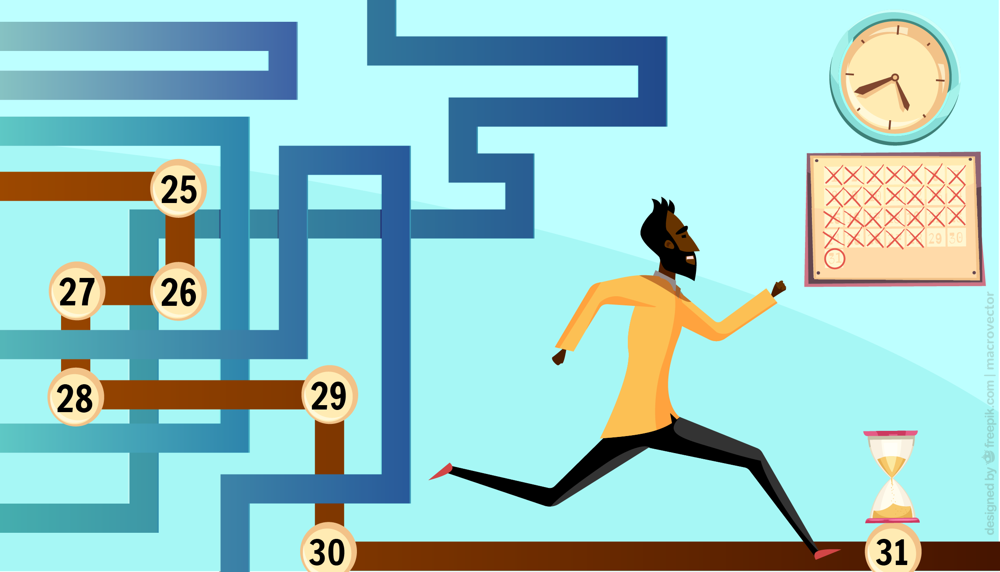
Fonte: Equipe de Produção/DocentEPT
Planejar é parte da história da humanidade. Para Vasconcellos (1995), planejar significa "antecipar mentalmente uma ação e agir de acordo com o previsto; é buscar fazer algo incrível, essencialmente humano: o real a ser comandado pelo ideal". O autor diz que, para que a escola cumpra o seu papel social de humanização e emancipação, o professor deve repensar sua prática e ressignificá-la. Para isso, o planejamento é o caminho mais adequado.
Segundo Libâneo (2004, p.123):
O planejamento consiste numa atividade de previsão da ação a ser realizada, implicando definições de necessidades a atender, objetivos a atingir dentro das possibilidades, procedimentos e recursos a serem empregados, tempo de execução e formas de avaliação. O processo e o exercício de planejar referem-se a uma antecipação da prática, de modo a prever e programar as ações e os resultados desejados, constituindo-se numa atividade necessária à tomada de decisões.(...) Sem planejamento, a gestão corre ao sabor das circunstâncias, as ações são improvisadas, os resultados não são avaliados.
O que precisamos considerar ao planejar nossa prática docente?
Como fazer isso em cursos técnicos da educação profissional?
É preciso compreender a educação para o
trabalho como uma forma de intervenção no mundo. Assim, como nós
intervimos no mundo do aluno por meio de nossa prática educativa, nosso
papel é possibilitar ao aluno uma formação com a qual ele possa intervir
no mundo do trabalho. Para isso, um passo essencial é reconhecer o
perfil do egresso e saber que aluno queremos formar.

2 Planejamento pedagógico
O planejamento da atividade docente deve ser construído pelo professor, tendo por base projetos pedagógicos elaborados coletivamente em sua instituição de ensino. Basicamente, dois projetos devem ser considerados:
- o Plano de Desenvolvimento Institucional (PDI) que envolve o planejamento das ofertas de curso e o Projeto Pedagógico Institucional (PPI);
- o Projeto Pedagógico de Curso (PPC) específico de cada curso, no qual organiza os saberes e dá forma ao curso, define o perfil do egresso e evidencia as concepções e fins da educação profissional inerente à área em questão. O PPC descreve todos os componentes curriculares do curso (disciplinas ou unidades curriculares, estágios, atividades complementares etc.)
Agora, é momento de saber porque o docente deve conhecer o PPC antes de construir seu plano de ensino e plano de aula.
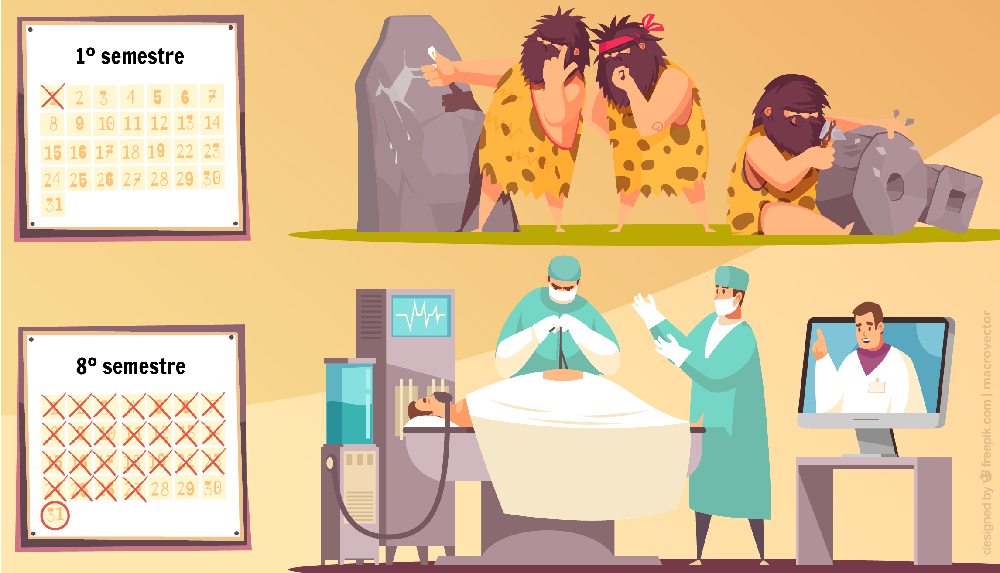
Fonte: Equipe de Produção/DocentEPT
Projeto Pedagógico do Curso
Como o resultado da ação coletiva, o Projeto Pedagógico do Curso (PPC) cria e dá identidade a um curso, revelando os objetivos e competências educacionais, profissionais, sociais e culturais. Retrata também a sua intencionalidade, o perfil do egresso, o número de vagas, o período mínimo e máximo de sua integralização, sua justificativa de oferta, eixo tecnológico e componentes curriculares, entre outros requisitos. Além de considerar as normativas institucionais e legais, o PPC trata das concepções pedagógicas e das orientações metodológicas para o ensino e para a aprendizagem, contemplando, ainda, aspectos relativos à avaliação e estrutura física e acadêmica para seu funcionamento. Resumindo: o PPC expressa o currículo do curso!
A elaboração de projetos pedagógicos de cursos para a educação profissional deve atender aos pressupostos legais de cada área, dispostos em instrumentos normativos, tais como a LDB, o Catálogo Nacional de Cursos, os Parâmetros Curriculares Nacionais, as Diretrizes Curriculares demais legislações. Deve, ainda, estar de acordo com o Plano de Desenvolvimento Institucional (PDI). O PPC será tratado na disciplina Projeto Pedagógico na Educação Profissional e Tecnológica, que tratará do processo de construção do PPC.
É a partir do Projeto Pedagógico do Curso que outros documentos são planejados e construídos, como é o caso do plano de ensino e o plano de aula, que veremos a seguir.
3 Plano de ensino e plano de aula
O que devo ensinar?
Ao assumir uma unidade curricular, a primeira pergunta que o docente precisa se fazer é "o que vou ensinar?", isto está descrito no Projeto Pedagógico de Curso, onde estão listadas as competências de cada disciplina e demais informações para cada docente iniciar suas atividades. Em educação profissional é necessário mais que o PPC para definir o que ensinar: é necessário o contato com os demais professores do curso para localizar a atividade de cada disciplina. Se estamos construindo competências, é necessário que tenhamos foco no Perfil Profissional de Conclusão do Curso, esta construção é sempre uma atividade coletiva dos docentes e demais envolvidos no curso. Portanto, cada docente de uma disciplina deve conhecer o que fazem os demais docentes no curso, localizando e contextualizando os saberes que tratará, mantendo sintonia, este é o grande desafio da interdisciplinaridade.
Como vou ensinar?
Nossas referências de ensinar, em geral vêm de nossa experiência como aluno, quando o professor fala e o aluno escuta, memoriza e responde a desafios de saberes memorizados. Em educação profissional essa estratégia é insuficiente para o desfio de formar um trabalhador com saberes e fazeres capazes de torná-lo proficiente em uma atividade laboral. A aula expositiva e dialogada deve ser usada com muita parcimônia na EP. Se o fazer é fonte de saber, como axioma da educação profissional, devemos privilegiar estratégias que coloquem o aluno em ação para a construção de saberes durante o fazer.
A escolha do "como vou ensinar", depende sempre de que competências estamos construindo, ou seja, a cada técnica ou saber a ser trabalhado existe uma estratégia didática que melhor se aplica. Aqui trataremos de algumas, mas ao longo da experiência docente, do compartilhamento de práticas em nossas comunidades de práticas de docente da EP, vamos aprimorando nossas técnicas e estratégias para maior efetividade do processo educativo. Como ensinar, deve ser sempre um motivador de conversas entre docentes de um mesmo curso de educação profissional.
É possível fazer um planejamento e na ação educativa este ser alterado, acompanhando os desafios diários e as características da turma. Todavia, sem um planejamento, não se tem clareza de onde chegar!
O Plano de Aula e o Plano de Ensino são referenciais importantes para o docente orientar sua didática, corrigindo seus rumos sempre que necessário em direção à construção do perfil profissional do curso.
3.1 Plano de ensino
O Plano de Ensino é um documento que descreve toda a atividade educativa de uma disciplina ao longo de um período letivo (semestre ou ano letivos).
É uma ferramenta que acompanha o fazer pedagógico do professor. Discrimina, de forma detalhada, todos os itens que serão trabalhados durante a unidade, inclusive as formas de avaliação. Expressa os saberes e as competências que devem ser desenvolvidas com os estudantes e que estão previstas no Projeto Pedagógico do Curso.
O plano de ensino trata da organização da Unidade Curricular ou Disciplina e deve ser adaptado sempre que for necessário. Deve ser apresentado ao aluno, preferencialmente, na primeira aula, por ser o instrumento que demonstra o planejamento de todas as etapas que envolvem as atividades dos professores e alunos ao longo do ano ou semestre escolar. É parte do contrato didático que o aluno participe ativamente de sua formação. Conhecer com clareza toda as atividades que serão desenvolvidas ao longo da disciplina é uma forma eficiente contextualizar o processo educativo.
Os trabalhadores que estamos formando na EP, no futuro, farão planos de trabalho e planejamentos em suas atividades laborais, se compartilhamos nosso planejamento docente com estudantes, já estamos estimulando o processo de organização da atividade desses futuros profissionais!
Todo plano de ensino
deve ter linguagem acessível ao aluno, para que este compreenda as
etapas que desenvolverá ao longo do período letivo e o levarão à
construção de suas competências. É importante destacar que todo plano de ensino
desenvolve uma ou mais competências gerais do perfil profissional,
descrito no PPC, mas pode conter competências específicas de acordo com o
planejamento da disciplina. Todavia, as competências específicas de uma
disciplina devem estar relacionadas a competências gerais do Perfil
Profissional.
O que um bom plano de ensino deve conter?
Cada instituição ou curso pode definir seu modelo de plano de ensino, não há rigor quanto a forma. Porém, é possível destacar alguns procedimentos e identificar alguns requisitos para elaborar um plano consistente:
- ter correlação com o Plano de Desenvolvimento Institucional da escola, para garantir consonância com a missão, visão e objetivos da instituição;
- ter estreita relação com o Projeto Pedagógico de Curso, para garantir a coerência na construção do Perfil Profissional de Conclusão;
- ter como base os saberes do trabalho, especialmente aqueles para o qual o curso está formando, adequando-se às necessidades e possibilidades dos estudantes;
- ser flexível e aberto para permitir a participação de todos os interessados e possibilitar ajustes sempre que necessário;
- usar as mais diferentes estratégias de ensino e de avaliação de acordo com as competências a serem trabalhadas;
- ser exequível, ou seja, executável em um determinado tempo ou duração, de forma adequada ao perfil da turma.
3.1.1 Exemplos de plano de ensino
Não existe um modelo rígido a ser seguido para a elaboração do plano de ensino. Além dos aspectos discutidos na página anterior, é importante incluir informações tais como: a ementa e a carga-horária (expressas no projeto pedagógico do curso), os conteúdos especificados, os objetivos de aprendizagem, as competências a serem desenvolvidas em longo prazo, a metodologia e as estratégias de ensino que serão adotadas, os recurso didáticos, as formas, instrumentos e critérios de avaliação, a bibliografia básica e complementar, as formas de recuperação e referências de leitura.
Toda instituição de Educação Profissional tem um padrão de plano de ensino a ser seguido por seu corpo docente. Em geral, sua estrutura tem três partes:
Parte I:
- Identificação: Instituição, Curso, disciplina (ou unidade curricular), carga horária, período de oferta da disciplina, professor. A maioria destes dados consta do PPC.
- Competências: lista de competências a serem desenvolvidas ao longo do semestre, em alguns casos, quando o curso define objetivos, serão listados aqui os objetivos de aprendizagem para o semestre. É comum haver descrição de competências gerais, associadas ao PPC e competências específicas associadas à disciplina. As competências específicas guardam correlação direta com as competências gerais que compõem o perfil profissional de conclusão do curso.
- Ementa: lista de saberes e fazeres a serem desenvolvidos ao longo do semestre. Esta lista é parte do PPC do curso. É importante destacar que competências referem-se às capacidades do educando a serem desenvolvidas ao longo do curso, enquanto que saberes e fazeres, tratam do conjunto sistematizado pelo docente a compor a construção das competências individuais de cada estudante.
Parte II:
- Cronograma de Atividades: uma tabela onde constam descritos para cada dia a aula, as atividades que serão desenvolvidas, destacando o local de cada uma (sala de aula, laboratório ou outros espaços). Incluir também a data e o formato de cada avaliação;
- Metodologia e Estratégias: listar as formas de implementar as atividades em sala de aula, incluindo as estratégias de abordagem a serem empregadas ao longo da disciplina. É importante que as estratégias estejam sintonizadas às competências a serem desenvolvidos, quanto maior a diversidade de estratégias, mais motivadora é a disciplina;
Parte III:
- Avaliação: indicar como será a avaliação da aprendizagem, instrumentos e formas de aplicação, como será composta a nota final, no cronograma deve constar a data de cada avaliação formal. É sempre importante reservar um tempo para a revisão da avaliação, onde o professor deve comentar aspectos relevantes de suas correções: maiores acertos e erros mais comuns. A avaliação é também um indicador da necessidade de revisão das estratégias, profundidade de abordagem, critérios de avaliação etc.;
- Recuperação: Conforme a LDB, todo aluno tem direito a estudos de recuperação, portanto, atividades específicas de recuperação deverão compor o plano de ensino de cada disciplina. É necessário propor atividades de recuperação para saberes e fazeres, garantindo a relevância dos diversos saberes na educação profissional.;
- Referências: deverão ser indicadas as referências utilizadas para elaboração da disciplina, bem como, indicação de material didático a ser usado pelos alunos, quando for o caso.
Exemplos:
Plano de ensino em Eletricidade:
Plano de ensino em Animação:
Lembrando...
As competências, às vezes referidas como objetivos de aprendizagem, precisam traduzir as intenções educativas, indicar o que se espera alcançar como consequência do processo educativo e ser elaboradas tendo em vista o perfil do egresso estabelecido no PPC. Na educação profissional devem sempre estar associadas a atividades identificáveis no mundo do trabalho.
3.2 Plano de aula
O Plano de Aula é o instrumento que descreve o desenvolvimento de uma aula ou de um dia de atividade letiva.
Todo docente iniciante precisa organizar cada aula que ministrará, como sendo um desdobramento do Plano de Ensino. No plano de ensino estão descritas resumidamente as atividades de cada dia de aula. O plano de aula vai detalhar toda a atividade. À medida que ficamos mais experientes na disciplina, o plano de aula torna-se mais resumido, mantendo a lógica de desenvolvimento da disciplina. É comum que as anotações no diário de classe ou instrumento semelhante, sejam o registro do que ocorreu no desenvolvimento da aula, como forma de garantir continuidade nas atividades educativas de uma turma, especialmente quando o professor leciona várias disciplinas ou para várias turmas. Quando o professor inicia as atividades de uma turma em descontinuidade, os alunos percebem e se frustram, uma vez que o professor não guarda compromisso educativo com aquela turma, ou seja, fere o contrato didático.
O plano de aulas e o registro do que ocorreu em cada aula é fundamental para o professor cumprir sua parte do contrato didático.
O planejamento de cada aula deve considerar:
- O Plano de Ensino da disciplina;
- O que ocorreu na aula anterior, em geral registrado no diário de classe ou instrumento equivalente;
- O que será trabalhado nesta aula, especial atenção para a retomada de saberes ou atividades não finalizadas ou que os alunos tenham muita dificuldade;
- Momento inicial: contextualização - retomar saberes anteriores para localizar os alunos no que será tratado nesta aula.
- Desenvolvimento - quais saberes serão trabalhados? Quais as atividades serão desenvolvidas? Quais recursos serão necessários?
- Como avaliaremos o desenvolvimento dos alunos? Quais evidências de aprendizagem buscamos?
- O que deve ser indicado para estudos ou exercícios?
- Organizar todo o tempo de aula. A sobra de longos períodos ao final da aula ou não haver tempo para o desenvolvimento de todas as atividades é frustrante para o aluno e demonstra fragilidade de planejamento docente.
No processo de construção de saberes, o professor deve abusar de exemplos, demonstrações, associações entre eventos ou simulações. É importante descrever no plano de aula todo o material que deve ser utilizado. Assim, o aluno sempre terá possibilidades diversificadas de instrumentos para construção de suas competências.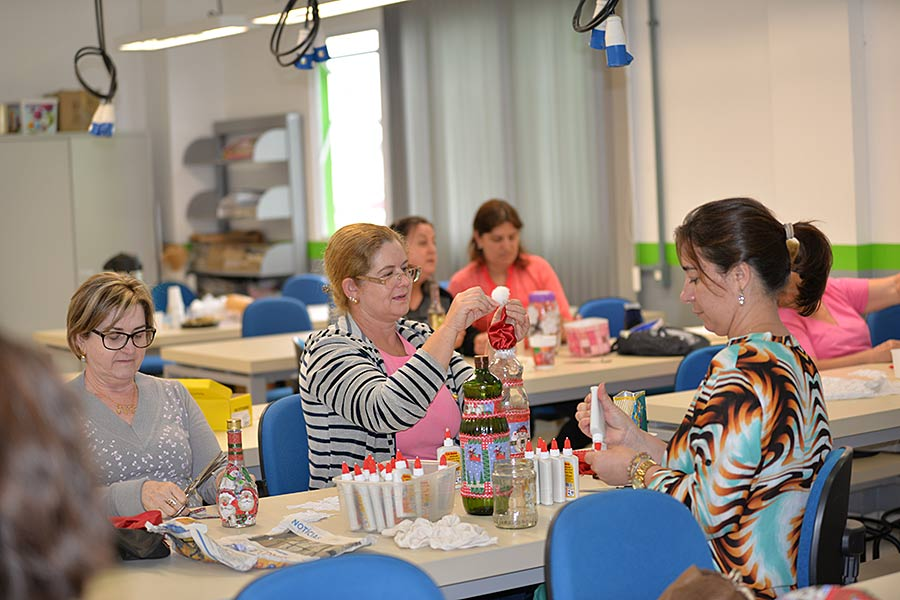
Curso Técnico - Campus Araranguá, IFSC
Todo plano de aula deve ser compartilhado entre docentes de uma mesma turma, para que as atividades educativas se sintonizem, se somem, em direção à construção do perfil profissional do egresso. Nada mais desanimador que um docente repetir conteúdos de outra disciplina paralela, criticá-la, desqualificar outros saberes, contradizer saberes em desenvolvimento em outra disciplina. Todos os docentes de uma mesma turma devem conversar, mesmo que informalmente sobre o que cada um trata em suas aulas, para que os alunos percebam que todos os docentes estão empenhados em trabalhar seus saberes em direção à construção de competências profissionais da mesma formação.
Vale destacar que um plano, seja de ensino ou de aula, não é uma camisa de força, é apenas uma orientação de atividades. É importante que o professor exercite sua sensibilidade para com a turma, adaptando saberes, condições e instrumentos de acordo com o desenvolvimento dos alunos. O mais importante é que aconteça a aprendizagem, mesmo que o professor lance mão de diferentes formas de ensino. Não adianta o professos querer esgotar seu plano de aula ou de cursos se os alunos não acompanham. É muito melhor que se perca conteúdos do que se perca aprendizagem!
A aula
A aula é mais do que seu plano, roteiro ou proposta de trabalho. É a ação concreta de todo processo de planejamento e o que resulta desse conjunto, manifestada na interação entre professor, alunos e saberes. Ela é dinâmica e reversível, podendo ser adequada, adaptada, retomada ou afirmada pela prática. Resulta desta relação:
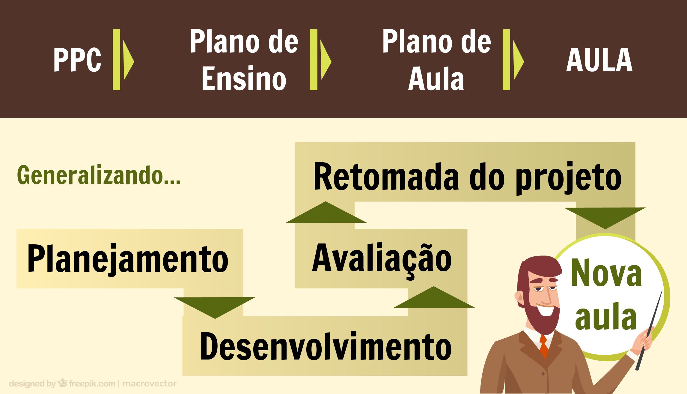
Fonte: Equipe de Produção/DocentEPT
3.2.1 Exemplos de plano de Aula
Apresentamos uma proposta de Plano de Aula: um modelo geral e um exemplo. É importante destacar que estes são apenas modelos, ou seja, propostas. Há muita criatividade na elaboração dos planos de aula, isto é parte da liberdade pedagógica docente. Todavia, como referência elaboramos uma proposta com os principais elementos a serem desenvolvidos em uma aula.
Não existe um plano correto ou errado, é prerrogativa docente a elaboração de seu plano, todavia, nos concursos e em muitas escolas, é exigido que o docente saiba elaborar um plano para sua disciplina ou componente curricular, para tanto apresentamos o conjunto de elementos que não podem faltar em um plano.
Exemplos:
.
Disciplina e Unidade Curricular são sinônimos, conforme já comentamos.
Componente Curricular é um termo mais geral, inclui as disciplinas e as demais atividades letivas constantes do currículo do aluno, tais como: unidades curriculares, estágios, atividades extraclasse, prática esportiva em times escolares, atividades de extensão etc. O PPC do curso indica todos os componentes curriculares a serem cumpridos pelo aluno para ter direito à diplomação.
4 Estratégias de Ensino
Em relação aos procedimentos e estratégias para o ensino, temos uma variedade de possibilidades. Vamos apresentar algumas delas aqui, organizando-as no que chamaremos de “macro” estratégias voltadas à Educação Profissional (Daltro Filho; Allain, 2019), por serem amplas e abrangerem diversas possibilidades, bem como estratégias mais usuais e pontuais, que costumam ser empregadas em contextos tanto da EP assim como na Educação Superior em geral ou na Básica.
As estratégias podem ser combinadas, repensadas e adequadas a cada contexto de ensino. De forma geral, algumas estratégias permitem um menor contato com a obra e contexto laboral (como a aula expositiva e outras estratégias "para sala de aula") e outras oferecem ao aluno um maior contato com a obra e com situações do trabalho (como a aprendizagem baseada em problema, por projeto, simulação entre outras elencadas nas páginas seguintes).
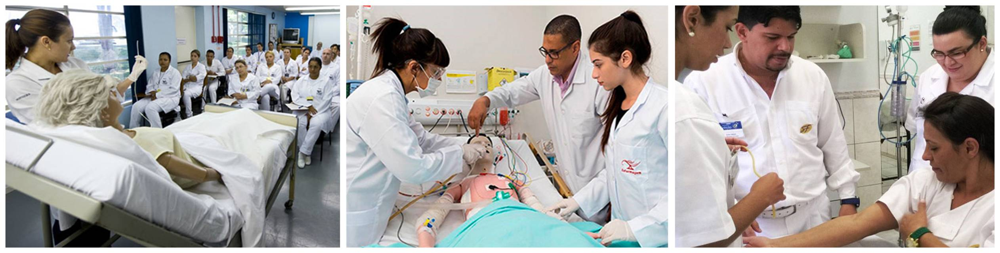Fonte das imagens: pronatec.pro.br
As figuras acima exemplificam o uso de diferentes estratégias no curso técnico em Enfermagem:
Figura 1: A
professora conduz a aula expositiva, ela até utiliza manequim
humano, mas os alunos não têm a oportunidade de manusear e observar de
perto os procedimentos por ela demonstrados;
Figura 2: Um grupo de alunos trabalha em equipe na resolução de um problema colocado pela docente (aprendizagem baseada em problema), manipulando
um manequim de simulação humana e outros equipamentos que estariam
disponíveis num local de atendimento clínico de pacientes;
Figura 3: Aluna
realiza procedimento de enfermagem em uma voluntária, sob supervisão
docente, permitindo que os alunos experimentem a atividade laboral em
situações reais (ação que poderia ser parte de estratégia de imersão, mediada por obra ou aprendizagem por projeto (de extensão, por exemplo).
Importante!
Cada estratégia de ensino tem suas limitações e potencialidades, as quais devem ser consideradas pelo docente no processo de planejamento. Nas situações exemplificadas nas figuras acima, as duas últimas cenas mostram-se mais potentes para a formação profissional. Nelas os alunos têm a oportunidade de desenvolver competências necessárias ao profissional de enfermagem, experimentar a atividade laboral de forma situada, além de serem protagonista do processo de aprendizagem.

Para saber mais sobre as estratégias didáticas para a Educação Profissional que são discutidas na sequência, consulte o material (website) desenvolvido por Daltro Filho e Olivier Allain (2009).
4.1 Estratégias de contato com a obra
A Educação Profissional (EP) tem uma diferença muito significativa em relação à educação geral (propedêutica): visa à formação para o trabalho, para o exercício de uma profissão. Essa constatação parece bem óbvia, certo? Entretanto, é preciso apreciar bem as consequências que isso tem não só na vida do sujeito aprendiz, mas também quais são as potencialidades dessa característica para o ensino e suas implicações didáticas.
O
aluno da EP precisa colocar “olhos à obra”, além de mãos à obra, ter a
possibilidade de experimentar e pensar sobre um aspecto fundamental do
trabalho: a obra.
Mike Rose (2007) explorou as relações da obra do trabalhador com a sociedade e a formação do sujeito e Barato (2015) trouxe a discussão mais para o campo educacional. Vejamos mais de perto, a partir de exemplos.
Rose relata o caso do aluno do curso de eletricidade que fez uma instalação elétrica correta e que funciona, mas mesmo assim pede para refazê-la, pois, segundo ele, mesmo que a fiação não apareça ao futuro morador, a instalação está feia e essa obra não atinge o padrão estético que ele considera satisfatório. Outro caso é o do pedreiro que leva a família para lhes mostrar a excelência de sua obra. Esses exemplos - são vários para cada profissão - evidenciam a dimensão estética envolvida no trabalho, mais especificamente na obra, na qual materializam-se, também, outras dimensões: ética e social (o impacto da obra na vida do outro ou do grupo), ambiental, identitária, cultural, etc.
Tais casos mostram, sobretudo, que a própria aprendizagem “acontece por mediação da obra” (BARATO, 2015). Em outras palavras: ao se tornar autor da obra de seu trabalho, o trabalhador ou, no caso da Educação Profissional (EP), o aprendiz, pode aprender de forma mais significativa. Primeiro, porque a obra é o resultado do trabalho (ou da técnica, isto é, do processo ou da intervenção do trabalhador) e, assim, pode ser elemento norteador do planejamento e da avaliação da aprendizagem em EP. Segundo, como vimos, porque pode carregar as dimensões e valores citados (estéticos, éticos, sociais…), as quais podem agregar mais camadas de significados à aprendizagem.
A estudiosa Liv Mjelde (2015, p. 63-4) salienta a relação profunda entre significado e motivação, especialmente em EP. O distanciamento da formação em relação à vida laboral tende a contribuir com a perda de significado da escola para os alunos .
Vamos tentar traduzir isso para a sala de aula ou o laboratório.
Nem sempre o ensino reproduz as
condições do trabalho, embora existam muitas modalidades pedagógicas em
EP que buscam a maior interação entre o ensino profissional e o mundo do
trabalho (alternância, modelo dual, estágios regulares, entre outros).
No entanto, seja na sala de aula, seja em laboratórios, em projetos de
extensão ou em empresas pedagógicas (um restaurante-escola, por
exemplo), temos ambientes nos quais processos e situações profissionais
podem ser exploradas e a obra experimentada parcial ou totalmente. Essa
experimentação raramente se dará em condições idênticas às do mundo do
trabalho, em que o trabalhador sofre formas de pressão e desafios
diferentes (MJELDE, 2015, p. 28). Porém, tanto no que diz respeito à
preparação para o exercício da profissão como para a motivação do aluno
ou a sua identificação com essa profissão, a participação no processo de
elaboração, isto é, no fazer da obra, pode ser decisiva.
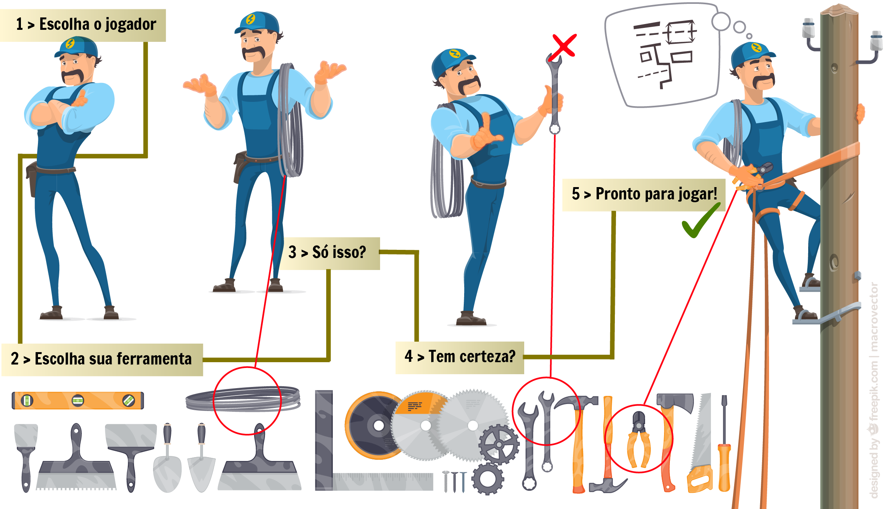
Fonte: Equipe de Produção/DocentEPT
Mas de que obra estamos falando?
Como dissemos acima, muitas obras diferentes podem ser produzidas em cada profissão. A instalação elétrica, a edificação, o atendimento ao paciente, o prato servido, o conserto do motor, a roupa, o alimento orgânico cultivado, o software, a ilustração produzida, uma análise, um levantamento, entre inúmeras outras. Claro que, no ensino da EP, o enfoque está no processo, porém quando o processo está direcionado para a obra, a atividade do aluno se torna central. Ora, "a compreensão vem por meio da atividade, da reciprocidade e da experiência pessoal" (MJELDE, 2015, p. 66).
A mesma autora ressalta que a oficina, o laboratório (el taller, em espanhol) é um espaço privilegiado para a aprendizagem. Acrescentaríamos: por meio do contato com a obra. Nesses ambientes didáticos, os estudantes "assam pão, fazem salsichas, constroem casas, cortam e desenham penteados, consertam televisores. A aprendizagem ocorre em meio a maquinários ou de fornos em ebulição" (idem, trad. nossa).
 Para uma leitura mais aprofundada sobre o assunto, leia o texto Conhecimento, trabalho e obra: uma proposta metodológica para a Educação Profissional.
Para uma leitura mais aprofundada sobre o assunto, leia o texto Conhecimento, trabalho e obra: uma proposta metodológica para a Educação Profissional.
4.1.1 Aprendizagem por obras
Uma das estratégias que torna mais evidente e completo o contato com a obra é denominada "aprendizagem mediada por obra" (BARATO, 2015). Em poucas palavras, podemos definir essa estratégia como:
Realização de uma obra característica de uma atividade profissional (geralmente em espaço físico semelhante ao encontrado no mundo trabalho) utilizando-se das ferramentas, instrumentos e procedimentos indispensáveis à sua execução. (Daltro Filho; Allain, 2019)
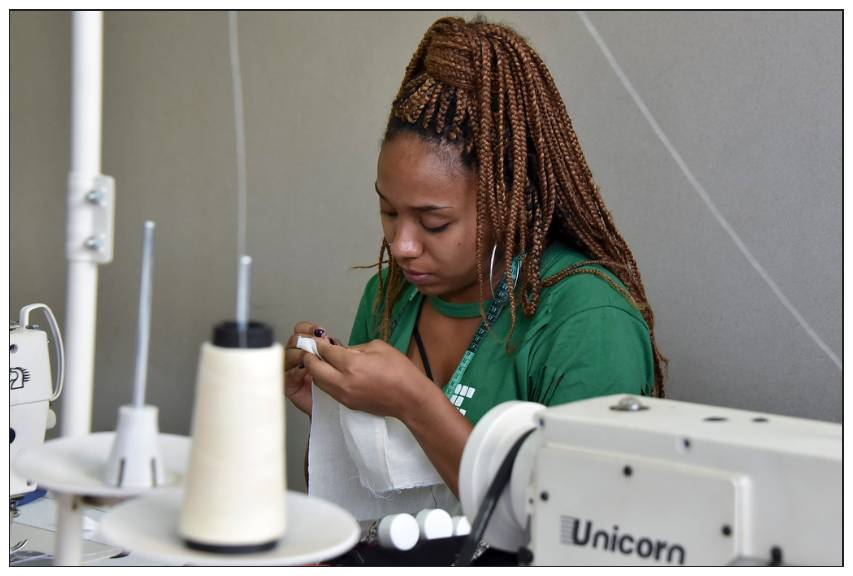
Aluna do curso técnico em Vestuário do Instituto Federal Brasília (IFB), Campus Taguatinga, trabalhando na realização de uma obra. [ampliar imagem]
Fotos: Pillar Pedreira, 2018. Fonte: Agência Senado (www.flickr.com/photos/agenciasenado).
Exemplos são: a
construção de um drone por discentes de um curso de engenharia
eletrônica; a realização de um corte de cabelo por estudantes do curso
de cabeleireiro; a elaboração de um prato por parte de alunos do curso
de gastronomia ou cozinha; a criação de um aplicativo por parte de
estudantes para uma Cooperativa; a confecção de uma coleção de moda e
realização de desfile aberto à comunidade; a realização de levantamento
topográfico por alunos de curso técnico de agrimensura em
propriedades rurais; entre outros.
Dinâmica da Atividade
1. Inicialmente, é necessário que a obra seja definida ou sugerida pelo discente, pelo docente ou pela comunidade externa.
2. Após a escolha da obra, é feito o planejamento de sua realização com previsão de materiais a serem utilizados (insumos, EPIs, ferramentas e utensílios, etc.), tempo e espaço físico necessários à sua execução, divisão de tarefas em caso de equipes, etc.
3. A obra pode ser desenvolvida de forma individual ou em equipes de trabalho. As equipes devem preferencialmente ser organizadas visando mesclar membros com diferentes níveis de técnicas e operações.
4. Orientações e exposição de fazeres-saberes tendem a ocorrer no início ou durante a realização da obra. Possíveis complementações através de materiais de apoio e demais explicações podem ser disponibilizados em ambiente virtual recorrendo à sala de aula invertida (BERGMANN e SAMS, 2012). As aulas presenciais são destinadas prioritariamente para o trabalho em oficinas.
5. Até a finalização da obra, o docente seguirá orientando os alunos ou equipes de trabalho se necessário. Quando concluída, a obra pode ser apreciada ou avaliada pela equipe, docente, turma e inclusive membros da comunidade escolar e da sociedade em geral. Quando houver implicação direta na comunidade, o retorno desta é fundamental.
4.1.2 Aprendizagem por projeto
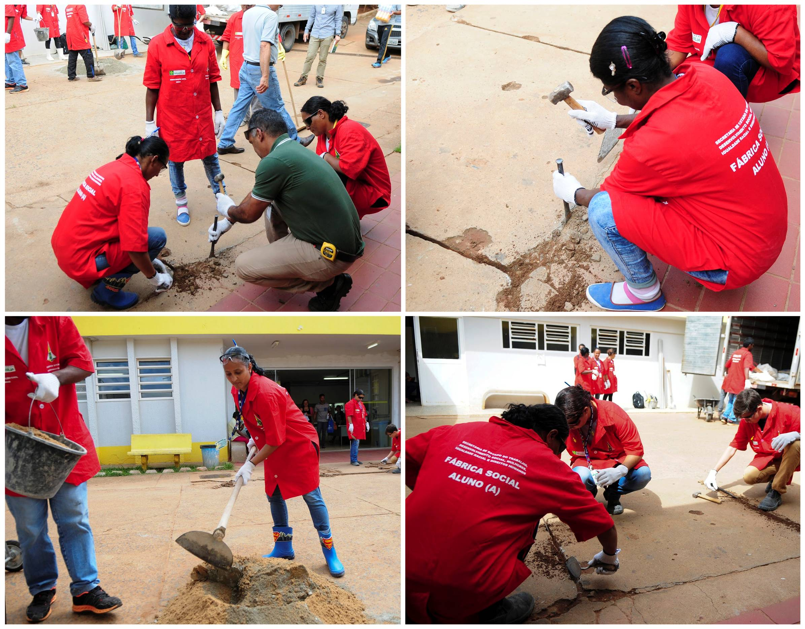
Alunos do curso técnico em Construção Civil (Fábrica Social, Brasília) em projeto de revitalização das rampas de acessibilidade no Hospital Regional de Sobradinho.
Fotos: Dênio Simões, 2018. Fonte: Agência Senado (www.flickr.com/photos/agenciasenado).
Outra estratégia que promove o contato direto do estudante com o fazer laboral é a aprendizagem por projeto.
Conforme material desenvolvido por Daltro Filho e Allain (2019):
"Projetos são empreendimentos com prazo determinado, objetivos delimitados e que surgem em geral a partir de uma necessidade, oportunidade, questão, problema ou interesses capazes de gerar muita motivação e envolvimento de aprendizes e professores (BENDER, 2014). No contexto educacional, os projetos podem ser desenvolvidos através das atividades de ensino, pesquisa e extensão".
Dinâmica da atividade
De forma geral, projetos têm como objetivos: desenvolver soluções para problemas profissionais e sociais reais; desenvolver materiais, produtos ou obras para fins de aprendizagem ou para uso profissional ou comunitário; produzir intervenções em ambientes do mundo do trabalho; oferecer informações úteis, entre outros. São inúmeras as possibilidades de projetos. A seguir estão algumas delas:
![Tabela dividida em duas colunas, com as seguintes frases de cima para baixo da esquerda para a direita: Montagem de prorótiopo ou maquete; Ensaio/teste sobre amostras ou análises de materiais (para aprendizagem, para profissionais ou para pesquisa; desenvolvimento de simuladores, serviços ou softwares; Consultoria técnica, escritório modelo, assessoria tecnológica, elaboração de kits didáticos, elaboraçãi de croqui, plantas, projetos ou modelos, desenvolvimento de equipamentos, ferramentas ou utensílios, intervenção na comunidade para resolução de problemas reais, planejamento e realização de eventos ou feiras (turísticos, gastronônicos, culturais, profissionais, etc), obras de dilvulgação de fazeres-saberes profissionais e culturais (livros, sites, blofs, canais de video, podcastas).](arquivos/LivroEpisto-2-08.png)
A partir dos estudos de John Dewey e William Kilpatrick, Barbosa e Moura (2013) dividem os momentos que envolvem a realização de um projeto em 4 partes:
1. Intenção
O objetivo pode ser definido a partir de uma negociação entre discentes, levando em consideração os objetivos educacionais da atividade, limitações temporais e materiais, etc. O projeto em desenvolvimento deve se relacionar com situações reais referentes ao contexto profissional e sua relação com o mundo do trabalho desde o seu objeto central. A finalidade dos projetos deve possuir utilidade (pode ser uma necessidade identificada numa comunidade de práticas, uma demanda socialmente instituída, uma intervenção em espaços públicos, etc.) e deve permitir aos alunos uma conexão entre os projetos propostos e o seu sentido real.
2. Planejamento
Definição de um prazo para o desenvolvimento do projeto, da quantidade de pessoas envolvidas e das etapas necessárias à sua concretização. Levantamento dos recursos a serem utilizados e como consegui-los. Elaboração de um cronograma para a realização das etapas e para a utilização dos recursos empregados no projeto. Programação de responsabilidades (BENDER, 2014).
3. Execução
Realização dos procedimentos elencados no planejamento sob orientação do professor
4. Avaliação
Os resultados dos projetos podem ser socializados com a própria turma, com a comunidade escolar e se necessário e pertinente, outros ambientes profissionais e comunitários.
4.1.3 Simulação
A simulação permite a ampliação dos modos de representação ou reflexão na ação do aprendiz (BÉGUIN, WEILL-FASSINA, 2002). É estratégia semelhante à emulação, embora a simulação esteja relacionada à imitação do comportamento de um sistema sem apego rigoroso à sua reprodução fiel, enquanto emulação diz respeito à reconstrução fiel e compreensiva de um sistema.
O mais importante em uma simulação são as significações que o aprendiz elabora por meio dela. A simulação permite contextualizar os saberes laborais, colocando-os em situações em que se vislumbra a experiência real, em que se toma decisões, interage, sente dilemas profissionais, comunicacionais, éticos, entre outros.
Consiste na criação de ambientes seguros de apoio à prática de atividades que imitem situações profissionais. Trata-se de uma adaptação, o que significa que em geral a situação simulada não comporta todas as variáveis de situações reais (imprevistos, pressão externa, etc.), mas representa uma etapa preparatória para elas. (Daltro Filho e Allain, 2019)
As modalidades mais comuns são:
- Utilização de simuladores (Pastré, Mayen e Vergnaud, 2006): simulador de voo, de circuito elétrico, de central nuclear, de paisagismo, etc.
- Simulação de situações/problemas profissionais em laboratórios, ambientes preparados ou espaços adaptados (SUE et al, 2010): laboratório de enfermagem, de instalações elétricas, etc.
- Dramatização, como situação de atendimento a um cliente ou paciente, primeiros socorros, entre outros.
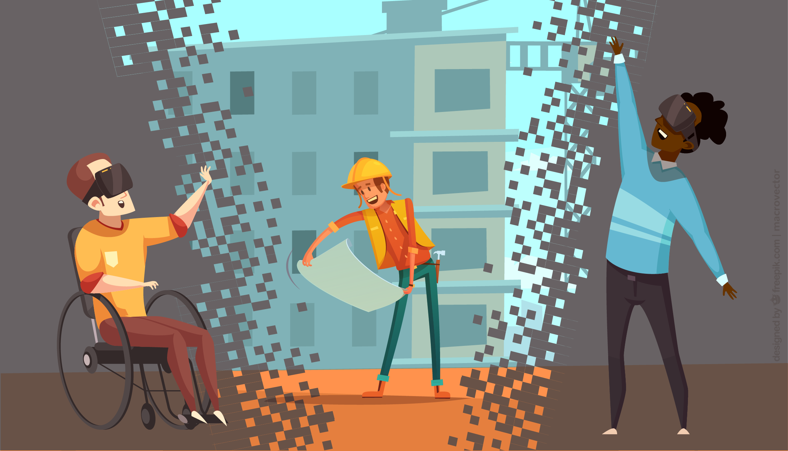
Fonte: Equipe de Produção/DocentEPT
Dinâmica da atividade
1. Introduzir a situação profissional a ser simulada.
2. Fornecer instruções ou orientações para realização da atividade proposta na técnica de simulação escolhida.
3. Aumentar o grau de complexidade a medida em que os discentes consolidarem habilidades, procedimentos, conhecimentos e capacidade resolutiva de adversidades mais corriqueiras. Introduzir ou retirar variáveis, adaptando a simulação.
4. Realizar retroanálise da atuação do aprendiz na situação simulada, por meio de discussão orientada, com uso da gravação e projeção de vídeos ou outros registros.
(Daltro Filho e Allain, 2009)
A simulação traz a atividade e elementos do contexto laboral para o ambiente escolar. Portanto, é uma estratégia de ensino complementar à imersão.
4.1.4 Imersão e Visita técnica
A estratégia de aprendizagem pela imersão ou visita técnica consiste num estudo direto do contexto natural e social no qual o estudante está inserido, visando a uma determinada problemática de forma interdisciplinar. Cria condições para o contato com a realidade e propicia a aquisição de conhecimentos de forma direta, por meio da experiência vivida.
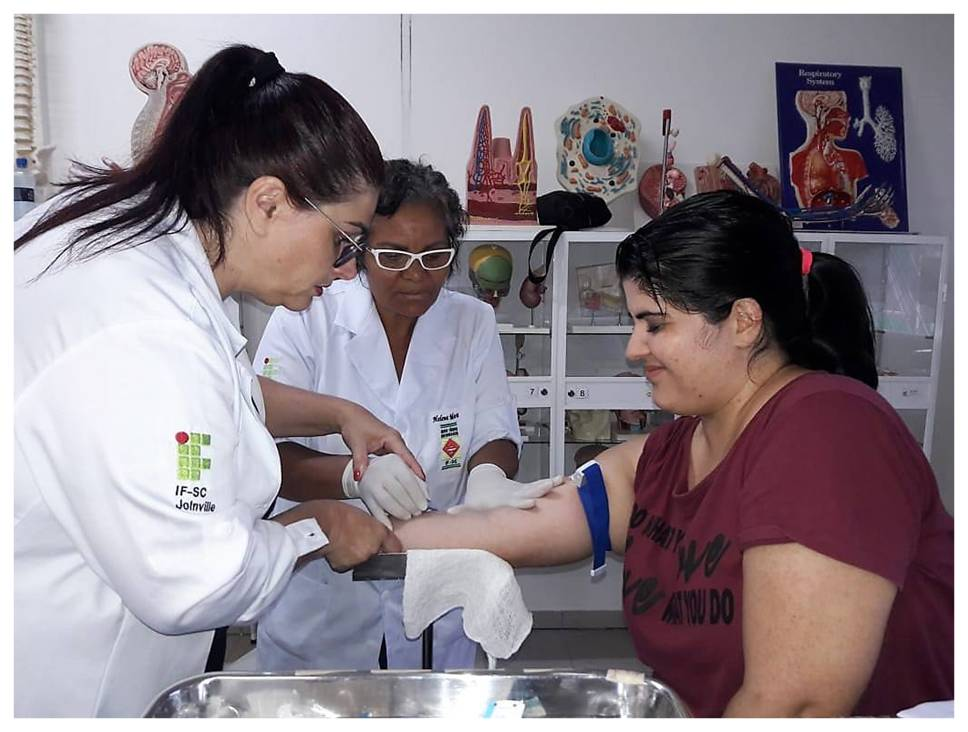
Aluna do curso técnico em Enfermagem em atividade de imersão. Fonte: www.ifsc.edu.br
A imersão não se limita à observação do contexto laboral. Por exemplo, o estágio e a residência (realizada pelos profissionais da área de saúde) são tipos de atividade de imersão. Seja observando ou atuando
no ambiente de trabalho visitado, essa estratégia permite ao estudante
traçar paralelos entre as situações didáticas vividas na escola e as
situações laborais reais.
Dinâmica da atividade
1. Planejamento: os estudantes decidem junto com o professor o foco de estudo, os aspectos importantes a serem observados, os instrumentos a serem usados para o registro da observação e fazem uma revisão da literatura referente ao foco de estudo.
2. Execução do estudo conforme planejado: levantamento de pressupostos, efetivação da visita, da coleta de dados, da organização e sistematização, da transcrição e análise do material coletado.
3. Apresentação dos resultados: os estudantes apresentam as conclusões para a discussão do grande grupo, conforme os objetivos propostos para o estudo.
(ANASTASIOU; ALVES, 2003)
A imersão e a visita técnica levam o aluno ao "mundo do trabalho". Portanto, é uma estratégia de ensino complementar à simulação.
4.1.5 Análise de erro deliberado
A estratégia de análise de erros, ou Avaliação pelos Pares de Erros Deliberados (Petty, 2004), pode ser utilizada para o desenvolvimento de atividades práticas, a fim de desafiar os alunos em sua capacidade de análise na identificação de erros ou não conformidades. Tais erros são recriados pelo professor na preparação da atividade.
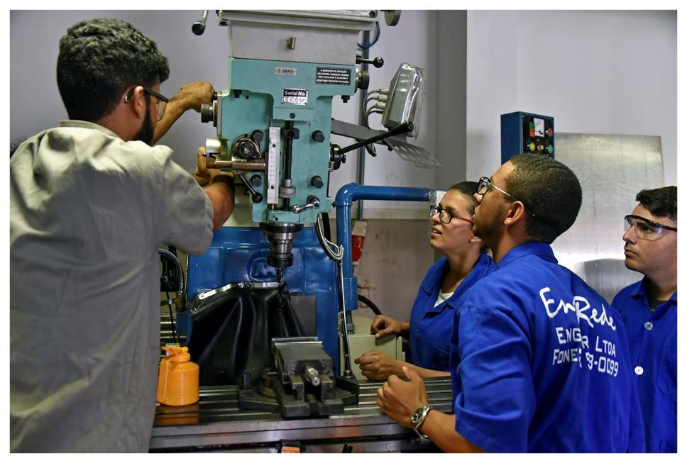
Aula do curso técnico em Eletromecânica, Instituto Federal Brasília.
Foto: Pillar Pedreira. Fonte: www.flickr.com/photos/agenciasenado
Esta é uma atividade
divertida e um exercício útil para "inocular" os alunos contra erros e
mal-entendidos comuns, pode ser utilizada como atividade prática e de
avaliação para o fechamento de um tópico de estudos.
Dinâmica da atividade
1. Cada grupo recebe uma peça/componente, uma planilha, ou desenho de um processo, que apresenta erros deliberados (propositais) pelo professor;
2. A partir disso os alunos trabalharão por conta própria para encontrar os devidos erros. Fazendo-se os seguintes questionamentos:
O que há de errado?
Por que está errado?
Como fazer isso direito?
3. Depois de respondidas aos questionamentos, cada par de alunos explica os erros de cada um dos exemplos aos demais parceiros. Nesse momento, os demais pares podem identificar erros que os demais parceiros não perceberam;
4. Como fechamento, o professor questiona pontualmente aos alunos sobre os erros que eles encontraram e os confirma ou nega, esclarecendo os equívocos cuidadosamente.
Destaca-se que, se os alunos não conseguirem identificar erros, eles não poderão revisar o seu próprio trabalho. Ao avaliar e refletir sobre os métodos, eles chegam a entendê-los melhor, tornando-se mais reflexivos de seu próprio aprendizado.
4.1.6 Tecnografia ou Análise da atividade
A análise da atividade ou Tecnografia (análise da técnica) podem ser ótimas estratégias para familiarizar o aprendiz com uma profissão e com situações características ou críticas de uma profissão, de uma técnica. A estratégia costuma ser desenvolvida presencialmente, acompanhando a/o trabalhador/a ao longo de um período de tempo (uma hora, um turno ou mais, dependendo da atividade desenvolvida e observada). Pode também ser analisados vídeos de profissionais, como atividade não presencial. Esta estratégia é muito utilizada em Didática Profissional para conceber situações de formação, mas cada vez mais está sendo utilizada durante a formação, como estratégia de ensino mesmo (Tourmen apud Gruber, Allain, Wollinger, 2019).
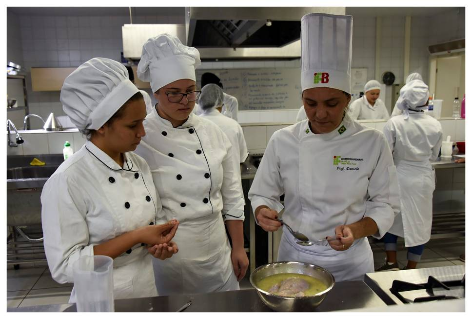
Aula do curso técnico de Gastronomia, Instituto Federal Brasília. Foto: Pillar Pedreira. Fonte: Agência Senado (www.flickr.com/photos/agenciasenado)
Dinâmica da atividade
1. Preparação da observação
Inicialmente docente e estudantes devem definir as situações ou técnicas a serem observadas, em consonância com os objetivos de aprendizagem. A partir disso, deverão definir o que será analisado.
Também é importante elaborar um roteiro que pode ser construído pelo docente previamente ou em conjunto com os estudantes, onde constarão os aspectos a serem observados.
2. Observação da atividade laboral
A obervação pode ser feita individualmente, mas é interessante que a turma seja dividida em pares ou pequenos grupos (3 a 4 alunos). É possível, ainda, que o professor leve toda a turma para acompanhar o trabalho de um profissional. O professor orientará os estudantes acerca de cuidados a serem tomados para respeitar as condições de trabalho do profissional observado e buscar não agir de forma incômoda.
A situação e os horários de observação podem ser definidos em diálogo com o/a profissional.
Durante a observação, é importante, sempre que possível, haver uma entrevista ou conversa com o profissional, em que serão solicitados esclarecimentos sobre o porquê de determinadas ações, tirar dúvidas, etc.
3. Análise da atividade laboral
O estudantes deverão elaborar e apresentar sua análise da situação/técnicas observadas ao docente, seja por meio de relatório escrito ou oral, com registros em vídeo e áudio, se possível.
Tanto a observação quanto a análise podem ir além do que fora previsto inicialmente. Os estudantes poderão encontrar aspectos não previstos no roteiro de análise inicial, o que enriquecerá ainda mais a análise.
4. Socialização das análises
É importante que haja socialização em grande grupo para que sejam compartilhadas as percepções das situações e técnicas analisados.
Trata-se de uma estratégia que
permite entender e familiarizar-se melhor com a atuação profissional da
área do curso, a interdisciplinaridade, a interprofissionalidade, e que
pode trazer ricas reflexões e construções nos pequenos e grandes grupos
de estudantes.

Para saber mais sobre este tema, leia o texto A análise do trabalho em didática profissional, de Pierre Pastré (professor emérito do Conservatoire National des Arts et Métiers, Paris).
4.1.7 Perícia
A estratégia perícia (Petty, 2002) é bastante efetiva para desenvolver capacidade de descrição e análise, além de habilidades como escrever um ensaio, um relatório de laboratório, um programa de computador, um menu, um plano de cuidados, uma política de marketing, entre outros.
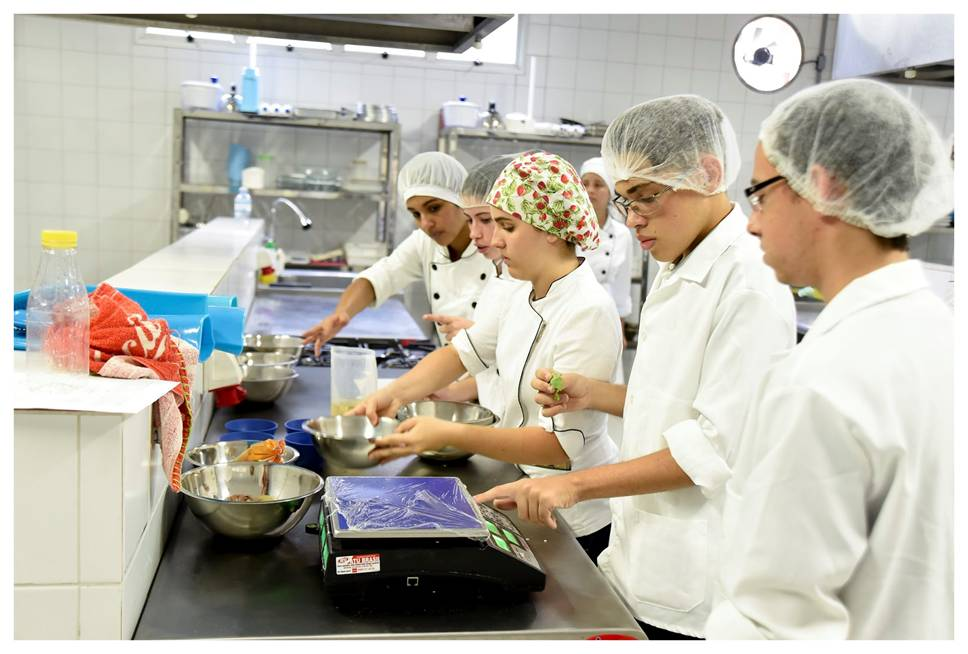
Aula do curso técnico de Gastronomia, Instituto Federal Brasília. Foto: Pillar Pedreira. Fonte: Agência Senado (www.flickr.com/photos/agenciasenado)
Antes de iniciar a atividade, o professor deve definir qual atividade prática ou experimento será realizada e ter clareza sobre qual competência
deseja desenvolver no aprendiz a partir daquela prática. Por exemplo,
no curso Técnico em Enfermagem: a competência enfocada por ser a de
“compreender e realizar a rotina de aspiração de vias aéreas
superiores”.
Dinâmica da atividade
1. Divisão da turma em grupos com papeis distintos:
- grupos que realizarão o procedimento;
- grupos que realizarão a avaliação do procedimento realizado pelos colegas.
2. Os grupos avaliadores elaborarão critérios de avaliação, de boas práticas da habilidade a ser desenvolvida. O professor também pode fornecer exemplos de habilidades necessárias a realização do procedimento, a fim de ajudar o grupo a definir estes critérios de boas práticas;
3. Depois da definição destes critérios de avaliação, os demais grupos realizarão o procedimento, enquanto são observados pelo grupo de colegas que estará avaliando a realização do procedimento, com base nos critérios de boas práticas definidos por eles;
4. Na sequência, os grupos que realizaram os procedimentos, em grande grupo, debatem as dificuldades encontradas e êxitos. E, junto a isso, são compartilhadas as percepções dos colegas que avaliaram a atividade prática a partir dos critérios estabelecidos, onde são indicados os pontos fortes e de melhoria para cada grupo que realizou o procedimento;
5. Por fim, o professor faz o fechamento da perícia consolidando os pontos fortes e de melhoria, buscando elucidar a importância de se desenvolver os procedimentos/atividades a partir do que foram prescritas, adaptando-se a rotina a partir do contexto encontrado para melhor solução de problemas.
4.1.8 Estudo de caso
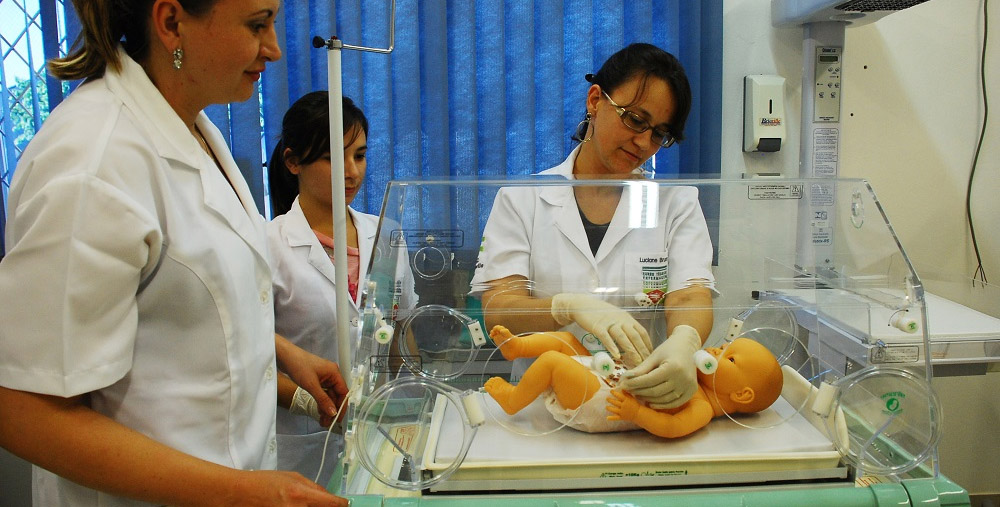
Alunos do curso técnico em Enfermagem do IFSC, Campus Joinville.
Fonte: https://linkdigital.ifsc.edu.br
Consiste na análise minuciosa e objetiva de uma situação real que necessita ser investigada e é desafiadora para os envolvidos.
A estratégia estudo de caso, assim como outras estratégias discutidas neste livro, pode ser utilizada de forma articulada com outras estratégias de ensino. Por exemplo, o estudo de caso pode ser a base para um processo de Aprendizagem por resolução de problema; ou a turma pode servir-se de uma Simulação para elaborar e testar as hipóteses de soluções para o caso enfocado; entre outras possibilidades de articulação que poderiam ser aqui mencionadas.
Dinâmica
1. O professor expõe o caso a ser estudado (distribui ou lê o problema aos participantes), que pode ser um caso para cada grupo ou o mesmo caso para diversos grupos. A descrição do caso deve trazer aspectos e categorias que compõem o todo da situação, indicar categorias mais importantes a serem analisadas;
2. O grupo analisa o caso, expondo seus pontos de vista e os aspectos sob os quais o problema pode ser enfocado;
3. O professor retoma os pontos principais, analisando coletivamente as soluções propostas;
4. O grupo debate as soluções, discernindo as melhores conclusões.
Nesta sequência de passos, vale destacar o que compete a cada um:
- O professor deve selecionar o
material de estudo, apresentar um roteiro para o trabalho, orientar os
grupos no decorrer do trabalho, elaborar instrumento de avaliação.
- Os alunos devem fazer a prescrição do caso (propor mudanças/resoluções para a situação apresentada) e a argumentação (justificar suas proposições mediante aplicação dos elementos teóricos de que dispõe).
4.1.9 Resolução de problemas
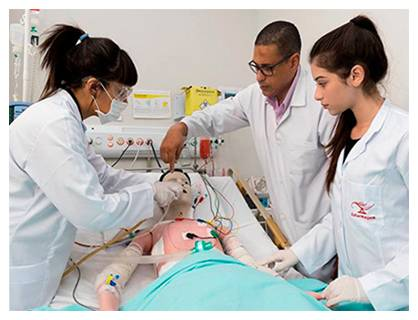
Alunos em curso técnico em Enfermagem trabalhando na resolução de um problema, utilizando um manequim de simulação humana. Fonte: pronatec.pro.br
A Aprendizagem Baseada em Problemas (ou aprendizagem por resolução de problemas) é muito utilizada na Educação Profissional. Constitui na mobilização de alunos envolvidos na resolução de problemas fictícios ou não de um determinado campo profissional. “Esse método de ensino fundamenta-se no uso contextualizado de uma situação problema para o aprendizado autodirigido” (BARBOSA e MOURA, 2013).
Os problemas a serem resolvidos são inúmeros, uma vez que refletem questões reais ou projeções. A seguir estão algumas possibilidades:
- Situações de exercício profissional. Exemplos: pane em um motor, erro em projeto de construção, inconsistência em balanço patrimonial, etc.
- Problemas de ordem social, ambiental, cultural, etc. Exemplos: resolução de conflito territorial, despoluição de rio em virtude de crime ambiental, entre outros.
Dinâmica da Atividade
É importante que, dentro da devida delimitação, a escolha do problema a ser resolvido seja feita pelo discente. A aprendizagem envolvida na resolução do problema exigirá motivação, interesse e disciplina por parte do aluno por tratar-se de uma metodologia altamente centrada no mesmo. Cabe ao docente atuar como mediador das discussões, manter equipes de alunos focadas e motivadas com as tarefas a serem realizadas e estimular a curiosidade e o espírito investigativo na busca da solução.
A partir de uma sequência demonstrada por Araújo (2011), sugere-se:
1. Realizar uma primeira aproximação do problema para melhor entendê-lo.
2. Elencar possíveis explicações com base no conhecimento da turma.
3. Destrinchar o problema para identificar, relacionar e organizar suas partes.
4. Construir os questionamentos que permitirão o aprofundamento do problema através de investigação e pesquisa.
5. Definir o que se espera aprender a partir dos resultados.
6. Estudo e discussão por parte do grupo, realizando o registro da atividade.
7. Compilação dos resultados obtidos na realização do trabalho.
8. Apresentação dos resultados do trabalho para os demais (outros grupos, docente, comunidade escolar, etc.)
4.1.10 Experimento e experiência
Experimento é a atividade que nos permite adquirir experiência. Ao longo do curso técnico devemos incluir muitos experimentos para que os alunos tenham possibilidade de adquirir alguma proficiência, ou seja, o domínio inicial das técnicas inerentes a cada profissão. Como já argumentamos, o fazer produz saberes!
O experimento é a oportunidade privilegiada para adquirir habilidade técnica, construindo assim a maturidade necessária à autonomia, esse é um processo peculiar à educação profissional, trabalhar conteúdos e atividades em direção à proficiência expressa no perfil profissional do curso. Vale um destaque de como a filosofia, desde um grande mestre, valoriza a experiência:
A espécie humana vive também de técnica e raciocínio. É da memória que deriva aos homens a experiência; pois as recordações repetidas da mesma coisa produzem o efeito duma única experiência, e, a experiência quase se parece com a ciência e a técnica. Na realidade, porém, a ciência e a técnica vem aos homens por intermédio da experiência, por que a experiência, criou a técnica e a inexperiência o acaso. (Aristóteles, 1973, pág. 212)
Este capítulo trata a “atividade prática” de forma geral, considerando as diversas formas de atividades experimentais nos cursos técnicos, é aplicável também às qualificações e às graduações, por outro lado, para cada formação técnica, há peculiaridades e formas diversas de implementação de experimentos, neste trabalho, procuramos tratar o que é mais comum e frequente nestas atividades.
O Catálogo Nacional de Cursos Técnicos, publicado pelo Ministério da Educação, contempla mais de 200 cursos, classificados por eixo tecnológico, com imensa diversidade de formações e áreas de atuação. As sugestões aqui contidas buscam atender a tal diversidade, portanto, é importante que cada professor adapte as propostas apresentadas às suas peculiaridades e às características de cada disciplina, laboratório, equipamentos, ferramentas ou instrumentos, procurando sempre observar os descritivos de seu curso contido no Catálogo Nacional, na Classificação Brasileira de Ocupações – CBO, nas normas das profissões regulamentadas, quando for o caso, e, também no Projeto Pedagógico do Curso.
Atividades experimentais
Dentre as atividades experimentais nos cursos técnicos, destacamos:
-
Exercícios para fixação de conteúdos;
-
Demonstrações feitas em sala de aula.;
-
Simulação de atividades gerenciais em sala de aula (análise de balanço, organização de um plano de negócios, organizando uma folha de pagamentos etc.);
-
Visitas técnicas a instituições e locais que tenham relação com os temas abordados em sala de aula;
-
Atividade de campo, onde os alunos são levados a observar fenômenos e eventos específicos ou realizar pequenas tarefas formativas;
-
Experimentos desenvolvidos pelos alunos em laboratório sobre conteúdos tratados em aula;
-
Uso de simulador para o desenvolvimento de habilidades, especialmente quando os sistemas reais possam ser de alto risco ou exigir proficiência avançada (pilotagem de aeronaves, punção venosa, produção de imagem radiográfica, técnicas de uso de aceleradores lineares de partículas, altas tensões elétricas, elevadas temperaturas etc.);
-
Microestágio, onde tarefas específicas são destacadas a serem observadas ou realizadas pelos alunos, em períodos que vão de um dia a uma semana;
-
Prática clínica, especialmente para os cursos na área da Saúde, onde são realizadas experimentos em ambiente específico como atividade letiva;
-
Montagem de modelo, protótipo ou maquete;
- Plantio, poda, rega, adubação e demais cuidados e observações de plantas e fungos;
-
Elaboração de croqui, plantas ou projetos em computador, como o CAD, ou desenhados em prancheta;
-
Ensaio ou teste sobre amostras, destrutivo ou não;
-
Implementação de projeto didático, como a elaboração de pequenos equipamentos ou modelos para contribuir na compreensão de fenômenos naturais ou no funcionamento de máquinas e equipamentos;
-
Projeto integrador – como atividade interdisciplinar, onde os alunos desenvolvem um projeto cujo tema articula vários saberes de diferentes disciplinas. Por definição, o projeto integrador é o articulador de competências das várias disciplinas de um mesmo período letivo;
-
Desenvolvimento de projeto de pesquisa, pela participação em grupo de pesquisa formal, cuja atividade extrapola os limites do curso ou da instituição;
-
Projeto de extensão vinculado à atividade educativa, que inclui a intervenção na comunidade externa, a partir de ação panejada e elaborada por alunos e professores;
- Estágio Curricular Supervisionado – conforme a Lei 11.788/2008: “Estágio é ato educativo escolar supervisionado, desenvolvido no ambiente de trabalho, que visa à preparação para o trabalho produtivo de educandos”, assim deve fazer parte do projeto pedagógico, além de cumprir requisitos legais. É importante destacar que o estágio quando obrigatório, não poderá ter sua carga horária considerada dentro do mínimo para o curso, conforme as Diretrizes Curriculares Nacionais.
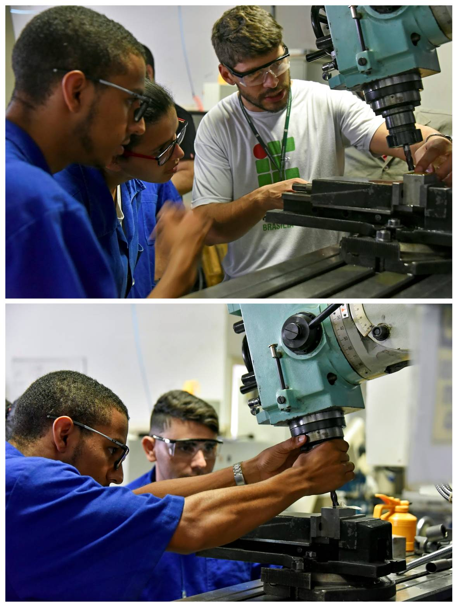
Aula em laboratório do curso técnico em Eletromecânica, Instituto Federal Brasília (IFB), Campus Taguatinga. Fotos: Pillar Pedreira, 2018. Fonte: Agência Senado (www.flickr.com/photos/agenciasenado).
“As palavras movem, mas os exemplos arrastam” deve ser o mote para a motivação às aluas experimentais. Os alunos gostam dessas atividades, aprendem muito com elas, além dos conteúdos da disciplina, aprendem e exercitam técnicas, fundamento da educação profissional. Há um saber no fazer, todavia este saber só acontecerá se permitirmos ao aluno participar de experimentos.
A partir de nossa experiência docente, podemos afirmar que:
- Os cursos de Qualificação devem ser construídos com uma relação de três para um, ou seja, 75% de atividades experimentais e 25% conteúdos explicativos;
- O Curso Técnico dever orientar-se para a relação um para um, ou seja, 50% experimental e 50% conteúdos explicativos. Assim, um curso de 1200 horas deveria pautar-se por 600 horas de atividades experimentais, desde a demonstração, exercícios de fixação, atividades de laboratório, até o desenvolvimento de projetos didáticos ou integradores. Aqui nos referimos especialmente às disciplinas técnicas dos cursos. Quanto às disciplinas propedêuticas, no caso do ensino técnico integrado ao médio, vale o planejamento específico para esta oferta. Todavia, a BNCC do Ensino Médio refere-se ao desenvolvimento de competências, ou seja, à capacidade de mobilizar e aplicar saberes às questões relacionadas a cada componente curricular.
4.1.11 Experimento de Laboratório
A escolha do tipo de experimento deve estar sintonizada à competência a que está associado, isto é, deve-se escolher o experimento mais eficiente para os saberes a que se destina. Aulas de laboratório são nossa mais frequente atividade experimental, nos cursos técnicos, por isso daremos mais ênfase a esta atividade fundamental, na formação de profissionais.
1. Planejando o Experimento
- Distribua os experimentos da disciplina ao longo do cronograma de aulas para que os alunos saibam as datas e atividades.
- Programe uma sequência coerente de atividades relativas ao tempo de aula.
- Aproveite uma aula expositiva anterior à de laboratório para explicar como será a atividade no laboratório, quando for o caso.
- Elabore e divulgue um pequeno roteiro para toda a atividade.
- Se sua disciplina tem aulas teóricas a práticas, procure distribuir as aulas práticas ao longo de todo o período letivo, a alternância entre laboratório e sala de aula, é um motivador da aprendizagem.
- As primeiras atividades de laboratório são para o aluno se familiarizar com o ambiente, equipamentos, instrumentos e ferramentas, proponha experimentos bem simples, apenas para familiarizar o aluno com o ambiente e seu instrumental.
- As primeiras aulas não devem prever relatório nem experimentos complexos, apenas como ambientação e desenvoltura no uso dos equipamentos e do ambiente.
- Desde a primeira entrada dos alunos no laboratório, explique a organização do ambiente, os locais de armazenamento e estabeleça que cada aluno é responsável pelo uso e guarda dos equipamentos e instrumentos.
- O laboratório também é um ambiente de aprendizagem de comportamentos, ou atitudes. É importante insistir que ao alunos comportem-se como profissionais diante dos experimentos, exercitando as atitudes e valores da profissão para a qual estão se preparando.
- O laboratório também deve ser um ambiente de construção de uma comunidade de práticas, pela cooperação, colaboração e interação entre futuros profissionais.
O sucesso de uma aula de laboratório é a preparação!
2. Preparando o Experimento
- Todo o material deve estar disponível e em condições de uso.
- Cabe ao professor certificar-se dos detalhes de sua aula e acompanhar a montagem, quando for o caso.
- Tenha uma lista completa dos materiais necessários ao experimento.
- Certifique-se que antes dos alunos entrarem no laboratório, todo o material esteja organizado e testado.
- A cada atividade peça a colaboração de alguns alunos, alternadamente, para distribuir material e ajudar na organização, é uma forma de assumirem a coordenação do espaço de trabalho, exercitando a cooperação.
- Planeje o experimento para ser completado ao longo do tempo da aula, não exagere nas atividades, a frustração de não ter tempo para completar o experimento é muito desestimulante para o aluno.
- Insista para que os alunos sigam o roteiro para a montagem do experimento, teste, leitura de variáveis etc.
- Procure destacar um aluno mais experiente, quando possível, para ajudar aos demais alunos, orientando-os, quando a tarefa exigir.
3. Orientando a atividade
- Como facilitador de aprendizagem é recomendado que as equipes sejam de dois alunos (no máximo três) por posto de trabalho no laboratório, grupos muito grandes se dispersam e muitos não participam das montagens, medições ou atividades correlatas. Em duplas, os alunos se ajudam e melhor dividem tarefas.
- É importante observar o comportamento dos alunos na atividade, para evitar que apenas um trabalhe e o outro (ou outros) se dispersem.
- Uma vez no laboratório, evite que os alunos deixem mochilas e outros materiais na bancada ou mesa de trabalho, procure manter um ambiente organizado, esclareça as regras de uso dos equipamentos, os cuidados com equipamentos, ferramentas, materiais de consumo etc.
- O aluno deverá manter na bancada de trabalho apenas o essencial para as atividades que serão desenvolvidas ao longo do experimento.
- Para experimentos onde várias ferramentas ou instrumentos são utilizados, é importante separar um conjunto para cada bancada, responsabilizando cada equipe pelo retorno do conjunto. É comum a tentação de levar “souvenir” do laboratório para casa, é responsabilidade do docente o acervo do laboratório.
- É natural a curiosidade em relação aos equipamentos e ferramentas desconhecidas dos alunos, torna-se importante que o professor apresente cada ferramenta, mostrando suas características e usos, incluindo a forma correta de segurar e utilizar cada ferramenta. Todavia, frequentemente é necessário recordar aos alunos o uso correto de uma ferramenta ou instrumento, até que se consolide seu correto uso e os devidos cuidados.
- Em geral os equipamentos utilizados nos experimentos possuem calibração e aferição própria. É importante que estejam calibrados e aferidos para uso, até que os alunos possam fazer a calibração ou aferição. É importante prevenir os alunos que o uso indevido pode desregular ou descalibrar equipamentos, comprometendo o experimento.
- Em muitos experimentos há risco de vida, seja por eletricidade, produtos químicos, perfurocortantes, máquinas operatrizes etc.; é fundamental que o professor alerte os procedimentos de segurança e confira todos os experimentos prevenindo possíveis riscos.
- O uso de equipamento de proteção individual (EPI), quando aplicável, deve ser obrigatório, mesmo que seja uma simulação, pois deve servir para criar o hábito no uso de EPI.
4. Desenvolvendo a atividade
- Deixe os alunos começarem o experimento mexendo nos equipamentos, ferramentas e demais materiais, assim adquirirão familiaridade com novas ferramentas.
- Insista para que operem equipamentos e ferramentas da forma mais profissional possível. O domínio proficiente de uma técnica, começa pelo uso apropriado de uma ferramenta!
- Provoque os alunos ao longo do experimento, questionando sobre o que está acontecendo, sobre a operação dos equipamentos e ferramentas, sobre os resultados esperados, sobre as discrepâncias com a teoria, quando for o caso.
- Certifique-se de que todas as equipes montaram o experimento, observaram sua operação, coletaram as variáveis, conforme o caso. Àqueles que terminaram muito cedo, indique novo experimento relativo à atividade, ou atividade mais complexa.
- Acompanhe para que todas as equipes consigam finalizar o experimento minimamente, ajudando àquelas com menor habilidade.
5. Finalizando a atividade
-
Ao final do experimento, exija que o material e componentes sejam guardados ou descartados apropriadamente, ferramentas limpas e guardadas ou devolvidas, equipamentos desligados ou retornados às configurações iniciais, mesa de trabalho limpa e cadeiras ou bancos devidamente organizados.
-
Exija sempre asseio e cuidado em todas as atividades práticas, contenha as brincadeiras dos alunos, habitue-os a encarar a atividade prática com a devida seriedade, por segurança, mas especialmente para exercitar atitudes profissionais, desde os primeiros experimentos.
-
A cada novo experimento, comente e corrija as atitudes pouco profissionais dos alunos, é mais eficiente elogiar o comportamento “técnico”, é fundamental que o professor comporte-se com o máximo de comportamento profissional, isto é, como sendo um técnico daquela atividade, para exemplo aos alunos.
Conversar sobre o comportamento profissional esperado é menos eficiente do que exercitá-lo!
.
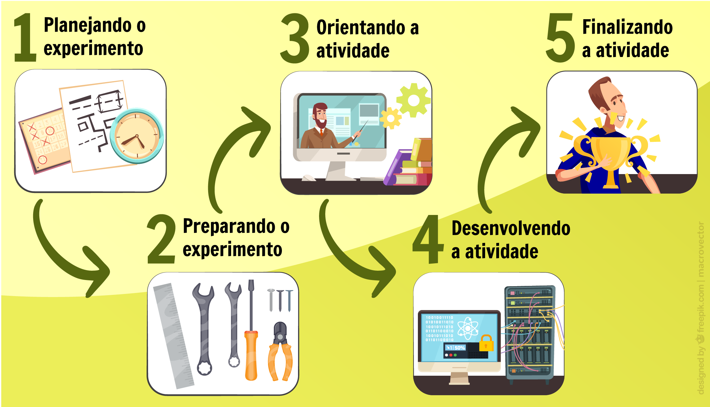
Fonte: Equipe de Produção/DocentEPT
Relatório de Experimento
Evite ao máximo os enfadonhos relatórios!!!
É comum que os alunos considerem as aulas de laboratório chatas ou as evitem, para não ter que fazer os famigerados relatórios! Na vida profissional é muito raro que um técnico tenha que fazer um relatório nos moldes que exigimos nas aulas práticas, além do mais, há modelos que as empresas desenvolvem segundo seus padrões.
Recomendamos um relatório simplificado para cada quatro experimentos em laboratório (quanto mais simplificado melhor). Em geral o relatório deve conter:
- Identificação.
- Nome e objetivo do experimento.
- Diagramas, esquemas, fluxograma, o que for pertinente.
- Lista de materiais, incluindo materiais de consumo, componente, ferramentas, equipamentos e demais insumos.
- Leitura de variáveis, tabela de resultados ou anotação do que foi realizado.
- Considerações sobre o experimento, seus resultados, discrepância com resultados calculados ou esperados, falhas, dificuldades ou desafios.
- Eventualmente recomendações para superação dos desafios.
Avaliação de Atividades Experimentais
Deixe claro os critérios de avaliação das atividades práticas. Em geral são avaliados:
- Cuidado com equipamentos, instrumentos e materiais em geral.
- Participação na atividade.
- Implementação da tarefa e sequência de montagem, quado for o caso.
- Aplicação correta do método e dos procedimentos.
- Coleta de informações, leitura de variáveis e confirmação de valores.
- Demonstração ou explicação da atividade realizada.
- Limpeza e organização do espaço utilizado, incluindo a guarda do material.
- Relatório do experimento, quando for o caso.
Conselhos importantes para Atividades Experimentais
Alguns conselhos importantes, para que a atividade experimental se contextualize à formação:
- Nunca implemente um experimento que não tenha sido testado antes, a frustração da aventura pode estimular o preconceito contra a atividade prática.
- Não leve seus alunos para atividade prática sem que tenham sido orientados previamente do que vai acontecer, a maioria dos estudantes acompanhará melhor um experimento contextualizado e previamente definido.
- Estimule a troca de informações e ajuda no desenvolvimento do experimento, entre os alunos de diferentes equipes, este é um exercício de solidariedade na construção de comunidades profissionais.
- No desenvolvimento de projeto, que demorará várias semanas, faça verificações de acompanhamento constantemente, concluir que o projeto não funciona ao final do período é muito frustrante.
- Procure, sempre que possível, equilibrar o valor da atividade experimental com a atividade teórica, na avaliação final da disciplina, buscando a mesma importância entre o fazer e o saber.

Nem sempre numa montagem os resultados esperados são obtidos: falha em componentes, falta de habilidade em lidar com instrumentos e equipamentos, pouco tempo para montagem e testes, dentre outros problemas, são muito comuns. Recomendamos não fundamentar a avaliação no resultado positivo do experimento. A avaliação deve ser centrada na experiência, isto é, na capacidade que os alunos adquirem, desenvoltura no uso dos materiais e ambiente, para implementar o experimento. Aos poucos os alunos começam a se familiarizar com o ambiente de laboratório e centrar em resultados positivos. Por isso, recomenda-se que os primeiros experimentos sejam mais para familiarização e aos poucos o foco seja dado ao experimento e seus resultados. Observe também que alguns alunos já possuem experiência e sua desenvoltura no laboratório é maior, procure torná-los “mestres de ofício” dos demais, estimulando-os a ajudarem seu colega mais que fazendo por ele o experimento.
4.2 Estratégias para sala de aula
As estratégias mencionadas até agora são as mais indicadas para a Educação Profissional, pois permitem um contato direto com a obra, com o saber-fazer e outros aspectos próprios de cada atividade laboral. Contudo, há outras estratégias de ensino, geralmente utilizadas na educação propedêutica, que podem ser eventualmente utilizadas na educação profissional.
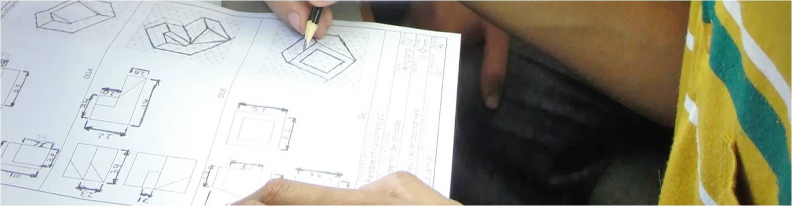
Aluno do IFSC, Câmpus Xanxerê, realizando exercício em sala de aula. Fonte: https://linkdigital.ifsc.edu.br
Tendo por base o texto Estratégias de Ensinagem (Anastasiou e Alves, 2003), listamos algumas destas estratégias.
Aula expositiva dialogada
Consiste numa exposição do conteúdo, com a participação ativa dos estudantes. Para Anastasiou e Alves (2003), o conhecimento prévio dos alunos deve ser considerado e pode ser tomado como ponto de partida. O professor leva os estudantes a questionarem, interpretarem e discutirem o objeto de estudo, a partir do reconhecimento e do confronto com a realidade. Deve favorecer análise crítica, resultando na produção de novos conhecimentos, e tentar superar a passividade e imobilidade intelectual dos estudantes.
Dinâmica
1. Professor contextualiza o tema de modo a mobilizar as estruturas mentais do estudante para operar com as informações que este traz, articulando-as às que serão apresentadas;
2. Faz a apresentação dos objetivos de estudo da unidade e sua relação com a disciplina ou curso;
3. Faz a exposição que deve ser bem preparada, podendo solicitar exemplos aos estudantes – e busca o estabelecimento de conexões entre a experiência vivencial dos participantes, o objeto estudado e o todo da disciplina. É importante ouvir o estudante, buscando conhecer sua realidade e seus conhecimentos prévios, que podem mediar a compreensão crítica do assunto, e problematizar essa participação;
4. O forte dessa estratégia é o diálogo, como espaço para questionamentos, críticas e solução de dúvidas: é imprescindível que o grupo discuta e reflita sobre o que está sendo tratado, a fim de que uma síntese integradora seja elaborada por todos.
Resolução de exercícios
Consiste no enfrentamento de uma situação nova, o que exige pensamento reflexivo, crítico e criativo a partir dos dados expressos na descrição do problema. Exige a aplicação de princípios ou leis que podem ou não ser expressos em fórmulas matemáticas.
Dinâmica
1. Apresentar ao estudante um determinado problema, mobilizando-o para a busca da solução.
2. Orientar os estudantes no levantamento de hipóteses e na análise de dados.
3. Executar as operações e comparar soluções obtidas.
4. A partir da síntese, verificar a existência de leis e princípios que possam se tornar norteadores de situações similares.
Seminário
Consiste num espaço onde as ideias devem germinar ou serem semeadas, ou seja, onde um grupo discute ou debate temas ou problemas que são colocados em discussão.
Dinâmica
1. Preparação – papel do professor é fundamental: a) apresentar o tema ou selecioná-lo com os estudante, justificar sua importância, desafiar os estudantes, apresentar os caminhos para realizarem as pesquisas e suas diversas modalidades (bibliográfica, de campo ou de laboratório); b) organizar o calendário para as apresentações dos trabalhos dos estudantes; c) orientar os estudantes na pesquisa (apontar fontes de consulta bibliográfica ou pessoas/instituições) e na elaboração de seus registros para a apresentação ao grupo; d) organizar o espaço físico para favorecer o diálogo entre os participantes.
2. Desenvolvimento: discussão do tema onde o secretário anota os problemas formulados bem como soluções encontradas e as conclusões apresentadas. Cabe ao professor dirigir a sessão de crítica ao final de cada apresentação, fazendo comentários sobre cada trabalho e sua exposição, organizando uma síntese integradora do que foi apresentado.
3. Relatório: trabalho escrito em forma de resumo, pode ser produzido individualmente ou em grupo.
Júri simulado
Consiste na simulação de um júri, em que, a partir de um problema, são apresentados argumentos de defesa e de acusação. Pode levar o grupo à análise e avaliação de um fato proposto com objetividade e realismo, à crítica construtiva de uma situação e à dinamização do grupo para estudar profundamente um tema real.
Dinâmica
Parte-se de um problema concreto e objetivo, estudado e conhecido pelos participantes. Então, organiza-se a turma da seguinte forma:
- Um estudante fará o papel de juiz e outro o papel de escrivão. Os demais componentes da classe serão divididos em quatro grupos: promotoria, de um a quatro estudantes; defesa, com igual número; conselho de sentença, com sete estudantes; e o plenário, com os demais.
- A promotoria e a defesa devem ter alguns dias para a preparação dos trabalhos, sob orientação do professor. No dia do júri, cada parte terá 15 minutos para apresentar seus argumentos.
- O juiz manterá a ordem dos trabalhos e formulará os quesitos ao conselho de sentença;
- O escrivão tem a responsabilidade de fazer o relatório dos trabalhos;
- O conselho de sentença, após ouvir os argumentos de ambas as partes, apresenta sua decisão final;
- O plenário será encarregado de observar o desempenho da promotoria e
da defesa e fazer uma apreciação final sobre sua desenvoltura.
Estudo de textos
Consiste na exploração de ideias do autor a partir do estudo crítico de um texto ou na busca de informações e exploração de ideias dos autores estudados (...). Um estudo de texto pode ser utilizado para os momentos de mobilização, de construção e de elaboração de síntese. A definição do texto dependerá do objetivo que professores e estudantes têm para aquela unidade de estudo.
Dinâmica
- Selecione um material que seja acessível ao estudante e ao mesmo tempo que vá desafiá-lo, assim como o acompanhamento do processo pelo professor, são condições de sucesso nessa estratégia.
- São habituais as observações de docentes acerca da dificuldade de leitura e interpretação por parte dos estudantes. Se essas são habilidades constatadas como pouco desenvolvidas, elas devem se tornar objeto de trabalho sistemático na escola para todas as áreas de formação.
- Quando o hábito de leitura estiver interiorizado, ficará mais fácil mobilizar o estudante para textos que se refiram à realidade, em especial, ao campo de trabalho futuro. Esses podem ser textos iniciais a serem acrescidos de outros com maiores especificidades de linguagem, conteúdos e complexidade da área em estudo.
- Muitas vezes o professor trabalha um texto com os estudantes e pede um “resumo”; para resumir o estudante precisará identificar, interpretar, analisar, organizar os dados, sintetizar para obter a produção solicitada pelo professor. Resumir não é uma operação mental simples, ela exige o auxílio e o acompanhamento do processo pelo professor pelo menos nas primeiras tentativas.
- A construção de esquemas, feitos coletivamente com a classe, auxilia o trabalho individualizado.
As estratégias aqui mencionadas estão profundamente impregnadas em nosso repertório cultural, no que tange a Escola. Relembrando o seu processo de escolarização, provavelmente perceberá que boa parte dele deu-se a partir de aulas expositivas, estudo de textos e resolução de exercícios, não é mesmo? Contudo, outros meios e processos de aprendizagem vêm ganhando evidência na atualidade, em especial os relacionados às tecnologias digitais de comunicação e informação.
Quem nunca aprendeu um fazer técnico fazendo, após observar um profissional, até mesmo através de um vídeo do Youtube?
A receptividade de nossos alunos em relação aos meios tradicionais de ensino, assim como a efetividade destes meios no processo de aprendizagem, já não é a mesma que fora décadas atrás. Daí a importância de utilizarmos, em especial no âmbito da educação profissional, estratégias nas quais os alunos possam colocar mão (e olhos) à obra, como ilustramos nas dez estratégias/instrumentos de ensino-aprendizagem discutidas no subcapítulo 4.1.
Mas não se quer dizer que as estratégias ditas tradicionais devam ser descartadas pelo professor. De fato, elas têm qualidades próprias e que podem ser exploradas de forma articulada com estratégias que colocam o aluno em posição mais ativa. Por exemplo, uma aula expositiva dialogada pode introduzir uma experiência em laboratório. Em resumo, é fundamental diversificar e articular diferentes estratégias de ensino no planejamento docente.

Leia o resumo do texto "Estratégias de Ensinagem" de Léa Anastasiou e Leonir Alves que apresenta uma série de estratégias de ensino, considerando as aplicações, dinâmicas e a forma de avaliação de cada uma delas.
4.3 A sala de aula invertida
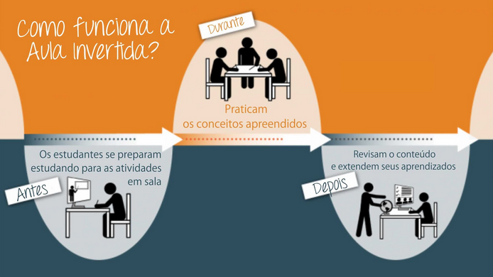
Infográfico de Sala de Aula invertida [ampliar imagem]
Fonte: Googleeducator (2019).
A sala de aula invertida ou flipped classroom é uma metodologia de ensino que inverte o processo de aprendizagem tradicional do estudante tornando-o mais ativo. Trata-se de “inverter” a lógica da aula como “monólogo” do professor e de promover a aprendizagem do aluno por meio da atividade. Assim, ele se torna protagonista de sua aprendizagem. Então, em vez da aula ser o momento expositivo, com eventuais “práticas” ilustrativas ou no final do curso, os momentos “presenciais” ficam mais voltados a atividades e oficinas e os materiais de apoio (textos, vídeos, sites, etc.) ficam disponibilizados em ambientes virtuais ou pesquisados pelos orientandos. Constitui um modelo “híbrido” sempre que recorre ao uso de ambientes virtuais, recursos de tecnologias da informação e comunicação, ferramentas colaborativas ou de autoria online.
Dinâmica da aula
Navegue nas telas a seguir para conhecer os passos que constituem a estratégia sala de aula invertida.
Fonte: info.geekie.com.br
5 Tempos didáticos da aula na EP
Os tempos didáticos
Tomando como referência livro Didática Geral, de Demétrio Delizoicov (2006), pode-se falar em tempos didáticos para evocar os momentos distintos que compõe uma aula, ou sequência de aulas. Eles conferem estrutura ao planejamento das ações docentes e ao próprio percurso de aprendizagem dos alunos.
Mas fizemos algumas adequações para o contexto da Educação Profissional (EP). Portanto, apresentamos a seguir uma síntese destes momentos, que dependem também da criatividade e condições de atuação do/a docente.
1º Momento
Segundo Delizoicov, este momento promove a problematização dos conteúdos a serem desenvolvidos na aula (2006). O docente pode utilizar-se de diferentes recursos (vídeo ou texto breve), atividades (tarefa, obra, experimento, exercícios ou discussão) para:
- levantar uma questão e discussão, de modo que os estudantes externalizem seus níveis de conhecimento prévios sobre a temática da aula;
- diagnosticar o conhecimento prévio dos alunos acerca do assunto, sobre uma técnica, as habilidades e aptidões destes frente ao desafio proposto, a capacidade de se adaptarem ou de solucionarem problemas. Para tanto, deve ser levado em conta o perfil e nível de desenvolvimento da turma, bem como se os procedimentos mínimos de segurança para o adequado desenvolvimento da atividade;
- motivar os estudantes, chamar sua atenção, atrair o interesse, ao mostrar, por exemplo, a relação do que será ensinado/trabalhado com sua formação profissional, com práticas sociais, com os conhecimentos anteriormente aprendidos no curso ou em outras unidade curriculares;
- problematizar o conteúdo da aula, inclusive lançando questões do tipo: como resolver determinado problema relacionado à profissão e a sua intervenção na sociedade? como produzir determinado produto? como realizar tal processo? como se relacionar com o público em determinadas situações? como se preservar de riscos à saúde? etc.
- introduzir temas ou técnicas que permitirão preparar o estudante para o que será desenvolvido a seguir (assim como se fala em constituir "subsunçores" na teoria da aprendizagem significativa).
2º Momento
Este momento é o de desenvolvimento de situações e atividades de aprendizagem, a partir da escolha da melhor estratégia para a aprendizagem das atividades e saberes-fazeres a serem desenvolvidos pelos estudantes, e com base os resultados da atividade realizada no momento anterior e busca consolidar os saberes laborais e científicos ali introduzidos. Nas atividades e situações, os estudantes irão mobilizar diversos saberes e desenvolver competências, solucionar problemas relacionados ao fazer-saber laboral em questão, refletir sobre as diversas dimensões das técnicas, saberes-fazeres, cultura técnica, etc.
3º Momento
No 3º Momento, trata-se de avaliar a aprendizagem dos estudantes e também da efetividade do ensino. Não insistiremos neste momento (o qual não ocorre necessariamente "no final" do processo), pois será aprofundado no Livro 3.
- Nos momentos iniciais, é importante acolher saberes prévios do aluno em relação ao fazer-saber que será enfocado, problematizando, instigando o interesse e preparando o aluno para o que virá.
- Em seguida, recomenda-se a escolha e o desenvolvimento de estratégias de ensino as mais adequadas possíveis aos objetivos de aprendizagem. Neste momento, o docente irá animar e orientar o processo de aprendizagem, trazendo conhecimentos novos, reorientando os pressupostos inicialmente formulados pelos alunos, fazendo a turma interagir, alertando para perigos, enfim: realizando a mediação docente e avaliando a aprendizagem, aspectos da Didática que são temas do Livro 3.

Acesse o livro Didática Geral de Demétrio Delizoicov (2006).
Considerações finais
Por fim, mais alguns aspectos sobre planejamento docente valem ser destacados:
O cuidado na seleção de recursos didáticos
Cada
recurso tem suas potencialidades e limitações. Portanto, a escolha deve
ser feita considerando o contexto de ensino e outras especificidades do
planejamento. Existem recursos analógicos e digitais, sendo que estes
nos possibilitam oferecer aos alunos a imersão através de simuladores,
visitas a museus, interação com comunidades de profissionais, análise de
atividade laboral através de vídeos, além do uso de ambientes virtuais
de aprendizagem.
A importância de avaliação
Desde
o planejamento, é necessário especificar formas e critérios de como
será realizada e avaliada a aprendizagem dos alunos. Há variadas formas
de verificar se o objetivo definido no Plano foi alcançado e se os
alunos estão aprendendo. Essas formas de verificação se manifestam tanto
em atividades a serem desenvolvidas em classe, individualmente ou
em grupo, quanto em atividades extraclasse, trabalhos de pesquisa ou
resolução de atividades. Sobre isto, estudaremos no Livro 3.
O plano é um guia (não uma prisão) para a ação docente
Sabemos
que nem sempre tudo que foi previsto num plano é passível de ser
realizado, tal qual foi planejado. A aula é dinâmica e, muitas vezes, o
plano sofre alterações no transcurso de uma aula ou disciplina. Por esse
motivo, os planos de aula e de ensino devem ser construídos de forma
flexível, funcionando como um guia orientador da ação docente, um
documento de gestão das ações do professor a partir da sala de
aula.
Referências
ARISTÓTELES. Metafísica, in Coleção Os Pensadores, São Paulo, Abril, 1973.
ANASTASIOU, L. ALVES, L. Estratégias de Ensinagem. In. Anastasiou, L. Alves, L. Processo de Ensinagem na Universidade. Capítuo 3. Ed. Univille; Joinville-SC, 2003.
CROUCH, C. H.,; MAZUR, E. Peer Instruction: Ten years of experience and results. American Journal of Physics, 69, p. 970–977, 2001.
DIONÍSIO, B. - O paradigma da escola eficaz entre a crítica e a apropriação social Sociologia: Revista do Departamento de Sociologia da FLUP, Vol. XX, 2010, p. 305-316. Disponível em: <http://ler.letras.up.pt/uploads/ficheiros/8802.pdf>. Acesso em: 07 nov. 2016.
FREIRE, P.. Pedagogia da Autonomia: saberes necessários à prática docente. São Paulo. Paz e Terra. 2004.
GUDWIN'S, Ricardo. Aprendizagem ativa. (Homepage). Unicamp, 2018. Disponível em: < http://faculty.dca.fee.unicamp.br/gudwin/activelearning>. Acessado em: 06 abr. 2018.
LIBÂNEO, J. C.. Organização e Gestão da escola: teoria e pártica. 5 ed. Goiânia. Alternativa. 2004.
LUCKESI, C. C. Filosofia da Educação. São Paulo. Cortez. 1994.
MATTOS, L. A. Sumário de Didática Geral. Rio de Janeiro. Aurora. 1964.
OLIVEIRA, João Batista Araujo; CHADWICK, Clifton. Aprender e Ensinar. 9 ed. Belo Horizonte. Alfa e Beto, 2008.
PETTY, Geoffy. Twenty Five Ways for Teaching Without Talking: presenting students with new material. Sutton Coldfield College, feb. 2002. Disponível em: < http://geoffpetty.com/for-teachers/active-learning/>. Acessado em: 01 abr. 2018.
PETTY, Geoffy. Active Learning: Formative Teaching Methods. (Homepage), jan. 2004. Disponível em: < http://geoffpetty.com/for-teachers/active-learning/>. Acessado em: 01 abr. 2018.
PIMENTA , S. G; ANASTASIOU, L. das G. C. Docência no ensino Superior. São Paulo. Cortez. 2002
PONCE, B. J. O que a escola tem para oferecer para a formação do jovem. Matéria publicada na Revista Onda Jovem Edição 15 – Junho de 2009 – Projeto de Futuro. Construindo pessoas. Disponível em: <http://www.facaparte.org.br/?p=1797>. Acesso em 22 de Abril de 2016.
TARDIF, M. Saberes docentes e formação profissional. Petrópolis. Vozes. 2014.
VASCONCELLOS. Celso S. Planejamento: plano de ensino-aprendizagem e projeto educativo. São Paulo. Libertad. 1995.
VASCONCELLOS, Celso dos Santos. Coordenação do trabalho pedagógico: do projeto político pedagógico ao cotidiano da sala de aula. 6.ª ed. São Paulo : Libertad , 2013.
VEIGA. Ilma Passos. (org) Projeto Pedagógico da Escola. Campinas. Papirus. 2001.
ZANONA, Roberta Castaldoni. Educar por competências na formação profissional. São Paulo. Centro Paula Souza. 2015.
Ficha Técnica
Este material foi elaborado pelos professores e pela equipe pedagógica e de materiais didáticos do Cerfead.
|
[ Conteúdo ] |
Olivier Allain - Paulo Wollinger - Ana Beatriz Bahia Baseado na edição 2019 (desenvolvido por Gislene Miotto - Márcia Lobo - Olivier Allain - Paulo Wollinger) |
|
[ Desenho educacional ] |
Maria Luisa Hilleshein de Souza |
|
[ Desenho gráfico ] |
Daniel Mazon da Silva |
|
[ Revisão textual ] |
Vanessa Martinelli Oro |